Ver código
options(
knitr.table.format = "html",
scipen = 999
)options(
knitr.table.format = "html",
scipen = 999
)ipak <- function(pkg){
options(repos = c(CRAN="https://cloud.r-project.org"))
new.pkg <- pkg[!(pkg %in% rownames(installed.packages()))]
if(length(new.pkg)) install.packages(new.pkg, dependencies = TRUE)
invisible(lapply(pkg, function(p)
suppressPackageStartupMessages(library(p, character.only = TRUE))
))
}
packages <- c("tidyverse","kableExtra","knitr","dplyr","ggplot2","psych","readxl")
ipak(packages)OpenAI (2026)
La estadística estudia fenómenos donde interviene el azar. Para modelarlos matemáticamente se utilizan las variables aleatorias y sus distribuciones de probabilidad, las cuales permiten describir de forma precisa el comportamiento de los resultados posibles.
1. VARIABLE ALEATORIA
Una variable aleatoria es una función que asigna a cada resultado del espacio muestral un número real:
X: \Omega \rightarrow \mathbb{R}
En términos conceptuales:
El soporte de una variable aleatoria es el conjunto de todos los valores posibles que puede tomar.
D_X = \{x \in \mathbb{R} : x = X(\omega)\}
Interpretación:
2. DISTRIBUCIÓN DE PROBABILIDAD
La distribución de probabilidad es la regla que asigna una probabilidad a cada valor de la variable aleatoria.
En términos estadísticos:
3. VARIABLES ALEATORIAS DISCRETAS
Una variable aleatoria es discreta si puede tomar valores finitos o infinitos numerables.
Ejemplo conceptual:
3.1 Función de Probabilidad
Es una función que asigna a cada valor de la variable su probabilidad.
p_X(x) = P(X = x)
Propiedades:
0 \leq p_X(x_i) \leq 1
\sum_i p_X(x_i) = 1
3.2 Función de Distribución Acumulada
Es la función que da la probabilidad acumulada hasta un valor x.
F(x) = P(X \leq x)
Caso discreto:
F(x) = \sum_{x_i \leq x} p_X(x_i)
3.3 Esperanza Matemática
La esperanza es el valor promedio teórico de la variable aleatoria.
E[X] = \sum_i x_i p_X(x_i)
3.4 Varianza
Definición:
La varianza mide la dispersión de la variable respecto a su media.
V[X] = \sum_i (x_i - E[X])^2 p_X(x_i)
4. DISTRIBUCIONES DISCRETAS
4.1 Distribución de Bernoulli
Modelo probabilístico para experimentos con dos resultados: éxito o fracaso.
p_X(x) = p^x (1-p)^{1-x}, \quad x = 0,1
E[X] = p, \quad V[X] = p(1-p) 4.2 Distribución Binomial
Modelo que describe el número de éxitos en n ensayos independientes.
P(X = k) = \binom{n}{k} p^k (1-p)^{n-k}
E[X] = np, \quad V[X] = np(1-p)
4.3 Distribución Hipergeométrica
Modelo que describe el número de éxitos en una muestra sin reemplazo.
P(X = k) = \frac{\binom{D}{k}\binom{N-D}{n-k}}{\binom{N}{n}}
E[X] = n \frac{D}{N}
V[X] = n \frac{D}{N}\left(1-\frac{D}{N}\right)\frac{N-n}{N-1}
4.4 Distribución de Poisson
Modelo que describe el número de eventos en un intervalo.
P(X = k) = \frac{e^{-\lambda} \lambda^k}{k!}
E[X] = \lambda, \quad V[X] = \lambda
5. VARIABLES ALEATORIAS CONTINUAS
Una variable aleatoria es continua si puede tomar infinitos valores en un intervalo.
Ejemplo:
5.1 Función de Densidad
f(x) = \lim_{h \to 0} \frac{P(x < X < x+h)}{h}
Propiedades:
f(x) \geq 0
\int_{-\infty}^{\infty} f(x)\,dx = 1
5.2 Probabilidad en intervalos
P(a \leq X \leq b) = \int_a^b f(x)\,dx
5.3 Función de Distribución
F(x) = P(X \leq x)
F(x) = \int_{-\infty}^{x} f(t)\,dt
5.4 Esperanza y Varianza
E[X] = \int_{-\infty}^{\infty} x f(x)\,dx
V[X] = \int_{-\infty}^{\infty} (x - E[X])^2 f(x)\,dx
6. DISTRIBUCIONES CONTINUAS
6.1 Distribución Uniforme
f(x) = \frac{1}{b-a}, \quad a \leq x \leq b
E[X] = \frac{a+b}{2}, \quad V[X] = \frac{(b-a)^2}{12}
6.2 Distribución Normal
f(x) = \frac{1}{\sigma \sqrt{2\pi}} e^{-\frac{(x-\mu)^2}{2\sigma^2}}
E[X] = \mu, \quad V[X] = \sigma^2
Estandarización
Z = \frac{X - \mu}{\sigma}
Una organización de consumidores anota regularmente el número de defectos importantes que se encuentran en un automóvil nuevo. De sus estudios ha encontrado que la función de distribución de la variable aleatoria X anteriormente mencionada es:
F(x)= \begin{cases} 0 & x < 0 \\ 0.06 & 0 \le x < 1 \\ 0.19 & 1 \le x < 2 \\ 0.39 & 2 \le x < 3 \\ 0.67 & 3 \le x < 4 \\ 0.92 & 4 \le x < 5 \\ 0.97 & 5 \le x < 6 \\ 1 & 6 \le x \end{cases}
Calcular P(X = 2)
Calcular P(X \geq 3)
Calcular P(2 \leq X \leq 5)
Calcular P(2 < X < 5)
Obtener la esperanza, la varianza y la desviación típica de X
Solucion
P(X = 2) = F(2) - F(1)
= 0.39 - 0.19 = 0.20
Resultado: P(X = 2) = 0.20
Interpretación: La probabilidad de que un automóvil nuevo presente exactamente 2 defectos importantes es 0.20, es decir, existe un 20\% de probabilidad de observar exactamente dos defectos importantes en un automóvil nuevo.
df_a <- data.frame(
x = 0:6,
fx = c(0.06, 0.13, 0.20, 0.28, 0.25, 0.05, 0.03),
destacado = ifelse(0:6 == 2, "Sí", "No")
)
ggplot(df_a, aes(x = x, y = fx, color = destacado)) +
geom_point(shape = 15, size = 4) +
geom_segment(aes(xend = x, yend = 0), linewidth = 1) +
geom_text(aes(label = sprintf("%.2f", fx)), vjust = -0.6, size = 4, show.legend = FALSE) +
scale_color_manual(values = c("No" = "gray70", "Sí" = "#E45756")) +
scale_x_continuous(breaks = 0:6, limits = c(-0.5, 6.5)) +
scale_y_continuous(limits = c(0, 0.32), breaks = seq(0, 0.30, 0.05)) +
labs(
title = "Inciso a: P(X = 2)",
subtitle = "Se resalta la probabilidad puntual en x = 2",
x = "Valores de X",
y = "f(x)",
color = ""
) +
theme_minimal(base_size = 13) +
theme(
plot.title = element_text(face = "bold", hjust = 0.5),
plot.subtitle = element_text(hjust = 0.5),
axis.title = element_text(face = "bold"),
panel.grid.minor = element_blank()
)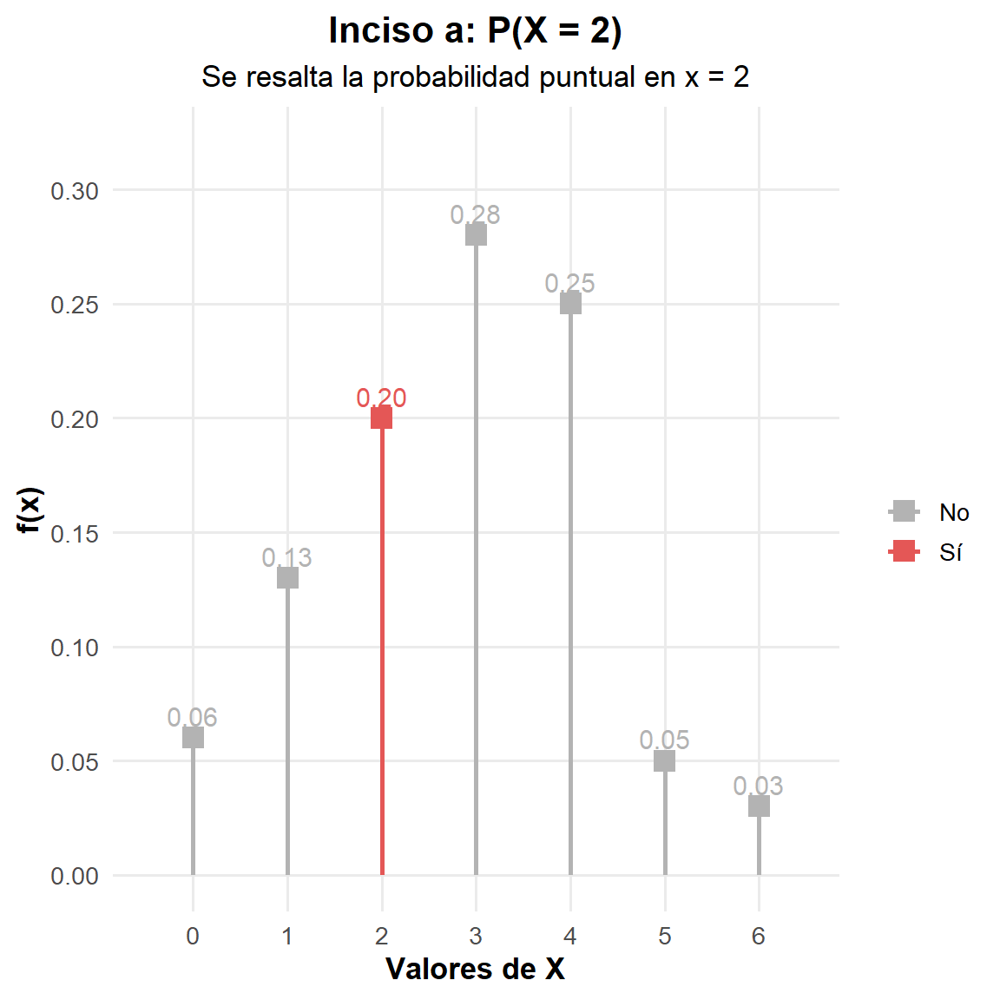
Interpretación: La gráfica resalta el valor x=2, ya que se trata de una probabilidad puntual. La altura del segmento en ese punto representa la probabilidad de que un automóvil nuevo tenga exactamente dos defectos importantes. Por ello, la gráfica muestra visualmente que P(X=2)=0.20.
P(X \geq 3) = 1 - P(X < 3)\ = 1 - P(X \leq 2)
= 1 - F(2) = 1 - 0.39 = 0.61
Resultado: P(X \geq 3) = 0.61
Interpretación: La probabilidad de que un automóvil nuevo presente 3 o más defectos importantes es 0.61, lo que significa que en el 61\% de los casos se espera encontrar al menos tres defectos importantes.
df_b <- data.frame(
x = 0:6,
fx = c(0.06, 0.13, 0.20, 0.28, 0.25, 0.05, 0.03),
destacado = ifelse(0:6 >= 3, "Sí", "No")
)
ggplot(df_b, aes(x = x, y = fx, color = destacado)) +
geom_point(shape = 15, size = 4) +
geom_segment(aes(xend = x, yend = 0), linewidth = 1) +
geom_text(aes(label = sprintf("%.2f", fx)), vjust = -0.6, size = 4, show.legend = FALSE) +
scale_color_manual(values = c("No" = "gray70", "Sí" = "#59A14F")) +
scale_x_continuous(breaks = 0:6, limits = c(-0.5, 6.5)) +
scale_y_continuous(limits = c(0, 0.32), breaks = seq(0, 0.30, 0.05)) +
labs(
title = "Inciso b: P(X ≥ 3)",
subtitle = "Se resaltan los valores 3, 4, 5 y 6",
x = "Valores de X",
y = "f(x)",
color = ""
) +
theme_minimal(base_size = 13) +
theme(
plot.title = element_text(face = "bold", hjust = 0.5),
plot.subtitle = element_text(hjust = 0.5),
axis.title = element_text(face = "bold"),
panel.grid.minor = element_blank()
)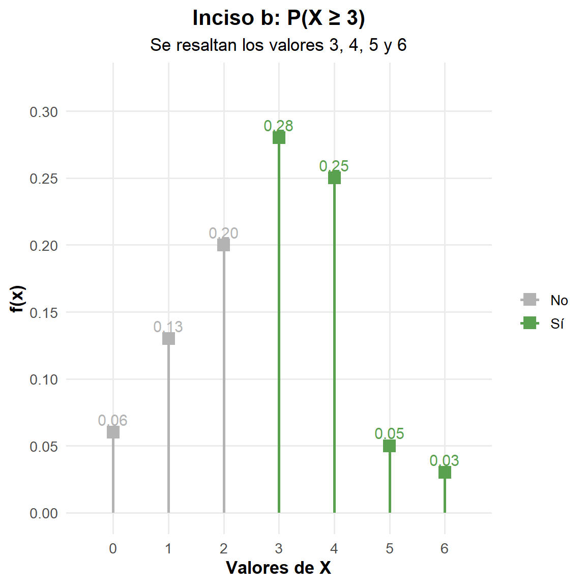
Interpretación: La gráfica resalta los valores 3,4,5 y 6, porque el evento X \geq 3 incluye todos esos resultados posibles. La probabilidad pedida se obtiene sumando las alturas de esos segmentos, lo que permite visualizar que la mayor parte de la probabilidad se concentra a partir de tres defectos. Por ello, se concluye que P(X \geq 3)=0.61.
P(2 \leq X \leq 5) = F(5) - F(1)
= 0.97 - 0.19 = 0.78
Resultado: P(2 \leq X \leq 5) = 0.78
Interpretación: La probabilidad de que un automóvil nuevo presente entre 2 y 5 defectos importantes, incluyendo ambos extremos, es 0.78. Esto indica que existe un 78\% de probabilidad de que el número de defectos importantes se encuentre dentro de ese rango.
df_c <- data.frame(
x = 0:6,
fx = c(0.06, 0.13, 0.20, 0.28, 0.25, 0.05, 0.03),
destacado = ifelse(0:6 >= 2 & 0:6 <= 5, "Sí", "No")
)
ggplot(df_c, aes(x = x, y = fx, color = destacado)) +
geom_point(shape = 15, size = 4) +
geom_segment(aes(xend = x, yend = 0), linewidth = 1) +
geom_text(aes(label = sprintf("%.2f", fx)), vjust = -0.6, size = 4, show.legend = FALSE) +
scale_color_manual(values = c("No" = "gray70", "Sí" = "#F28E2B")) +
scale_x_continuous(breaks = 0:6, limits = c(-0.5, 6.5)) +
scale_y_continuous(limits = c(0, 0.32), breaks = seq(0, 0.30, 0.05)) +
labs(
title = "Inciso c: P(2 ≤ X ≤ 5)",
subtitle = "Se resaltan los valores 2, 3, 4 y 5",
x = "Valores de X",
y = "f(x)",
color = ""
) +
theme_minimal(base_size = 13) +
theme(
plot.title = element_text(face = "bold", hjust = 0.5),
plot.subtitle = element_text(hjust = 0.5),
axis.title = element_text(face = "bold"),
panel.grid.minor = element_blank()
)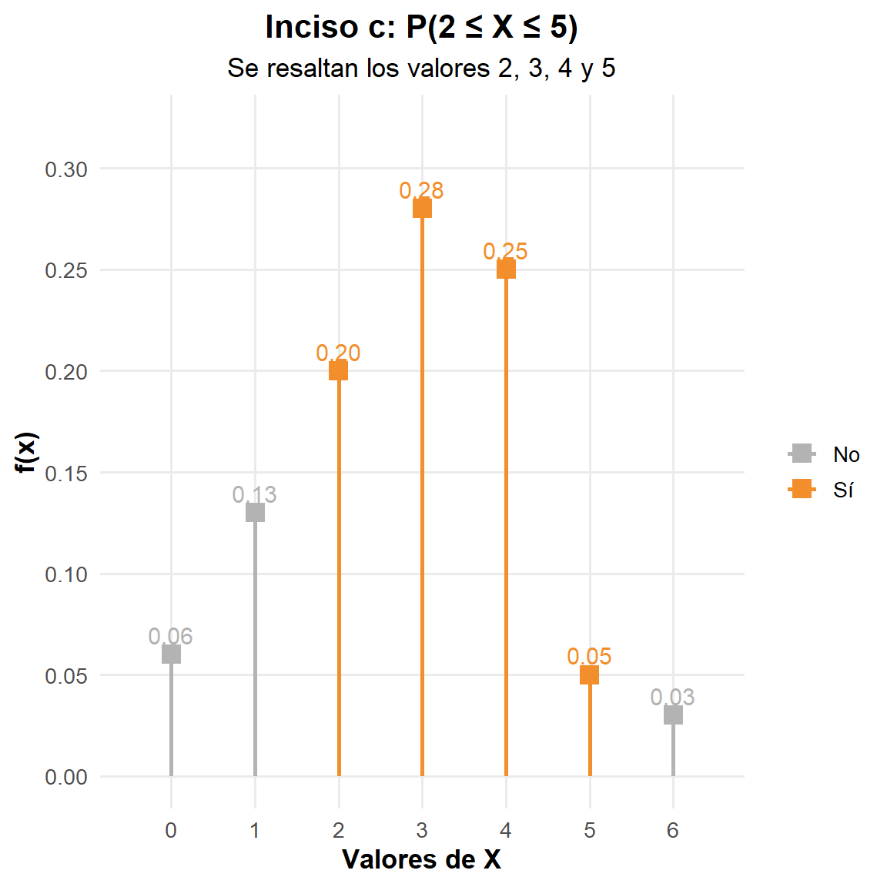
Interpretación: La gráfica destaca los valores 2,3,4 y 5, ya que todos ellos pertenecen al intervalo cerrado 2 \leq X \leq 5. La probabilidad se interpreta como la suma de las probabilidades asociadas a esos cuatro valores. Visualmente se aprecia que este intervalo reúne una parte importante de la distribución, por lo que P(2 \leq X \leq 5)=0.78.
P(2 < X < 5) = P(3 ≤ 𝑋 ≤ 4) = F(4) - F(2)
= 0.92 - 0.39 = 0.53
Resultado: P(2 < X < 5) = 0.53
Interpretación: La probabilidad de que un automóvil nuevo presente más de 2 y menos de 5 defectos importantes es 0.53, es decir, hay un 53\% de probabilidad de que el automóvil tenga exactamente 3 o 4 defectos importantes.
df_d <- data.frame(
x = 0:6,
fx = c(0.06, 0.13, 0.20, 0.28, 0.25, 0.05, 0.03),
destacado = ifelse(0:6 > 2 & 0:6 < 5, "Sí", "No")
)
ggplot(df_d, aes(x = x, y = fx, color = destacado)) +
geom_point(shape = 15, size = 4) +
geom_segment(aes(xend = x, yend = 0), linewidth = 1) +
geom_text(aes(label = sprintf("%.2f", fx)), vjust = -0.6, size = 4, show.legend = FALSE) +
scale_color_manual(values = c("No" = "gray70", "Sí" = "#B279A2")) +
scale_x_continuous(breaks = 0:6, limits = c(-0.5, 6.5)) +
scale_y_continuous(limits = c(0, 0.32), breaks = seq(0, 0.30, 0.05)) +
labs(
title = "Inciso d: P(2 < X < 5)",
subtitle = "Se resaltan únicamente los valores 3 y 4",
x = "Valores de X",
y = "f(x)",
color = ""
) +
theme_minimal(base_size = 13) +
theme(
plot.title = element_text(face = "bold", hjust = 0.5),
plot.subtitle = element_text(hjust = 0.5),
axis.title = element_text(face = "bold"),
panel.grid.minor = element_blank()
)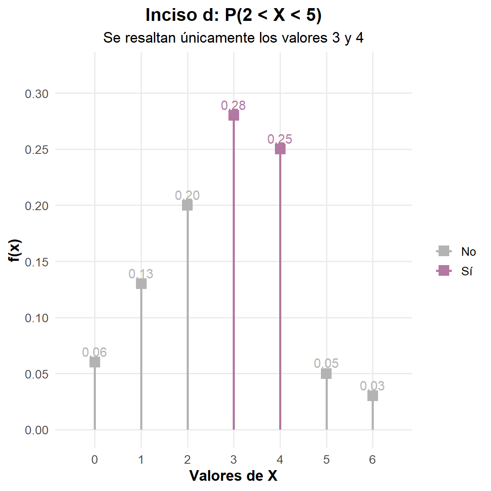
Interpretación: La gráfica resalta únicamente los valores 3 y 4, porque son los únicos enteros que cumplen la condición 2 < X < 5. Esto permite ver que la probabilidad pedida se obtiene sumando las probabilidades correspondientes a esos dos resultados. En consecuencia, la gráfica muestra que P(2 < X < 5)=0.53.
Esperanza Matematica o Valor Esperado
E(X) = \sum x f(x)
= 0(0.06)+1(0.13)+2(0.20)+\cdots+5(0.05)+6(0.03)
= 2.8
Varianza
V(X) =\sigma^2 = E(X^2) - [E(X)]^2 E(X^2)= \sum x^2 f(x)
= 0^2(0.06)+1^2(0.13)+2^2(0.20)+\cdots+5^2(0.05)+6^2(0.03)
= 9.78
V(X) = 9.78 - (2.8)^2 = 1.94
Desviación típica o Estandar
\sigma = \sqrt{1.94} \approx 1.393
Coeficiente de variación
CV = \frac{\sigma}{E(X)} = \frac{1.393}{2.8} \approx 0.497
CV = 0.497 \times 100\% = 49.7\%
Resultados:
Interpretación: El valor esperado de la variable aleatoria es E(X)=2.8, por lo que en promedio un automóvil nuevo presenta aproximadamente 2.8 defectos importantes. La varianza es 1.94, lo cual mide la dispersión de los datos respecto a la media. La desviación típica es \sigma \approx 1.39, indicando que, en promedio, el número de defectos se aleja alrededor de 1.39 unidades del valor esperado. Además, el coeficiente de variación es aproximadamente 49.7\%, lo que sugiere una variabilidad relativa moderada con respecto a la media.
x <- 0:6
fx <- c(0.06, 0.13, 0.20, 0.28, 0.25, 0.05, 0.03)
mu <- sum(x * fx)
df_e <- data.frame(x = x, fx = fx)
ggplot(df_e, aes(x = x, y = fx)) +
geom_point(shape = 15, size = 4, color = "#4C78A8") +
geom_segment(aes(xend = x, yend = 0), linewidth = 1, color = "#4C78A8") +
geom_text(aes(label = sprintf("%.2f", fx)), vjust = -0.9, size = 4) +
geom_vline(xintercept = mu, linetype = "dashed", color = "#E45756", linewidth = 1) +
annotate("text", x = mu + 0.25, y = 0.31,
label = paste0("E(X) = ", round(mu, 2)),
color = "#E45756", hjust = 0, size = 4) +
scale_x_continuous(breaks = 0:6, limits = c(-0.5, 6.8)) +
scale_y_continuous(limits = c(0, 0.32), breaks = seq(0, 0.30, 0.05)) +
labs(
title = "Inciso e: Media de la distribución",
subtitle = "La línea punteada marca el valor esperado",
x = "Valores de X",
y = "f(x)"
) +
theme_minimal(base_size = 13) +
theme(
plot.title = element_text(face = "bold", hjust = 0.5),
plot.subtitle = element_text(hjust = 0.5),
axis.title = element_text(face = "bold"),
panel.grid.minor = element_blank()
)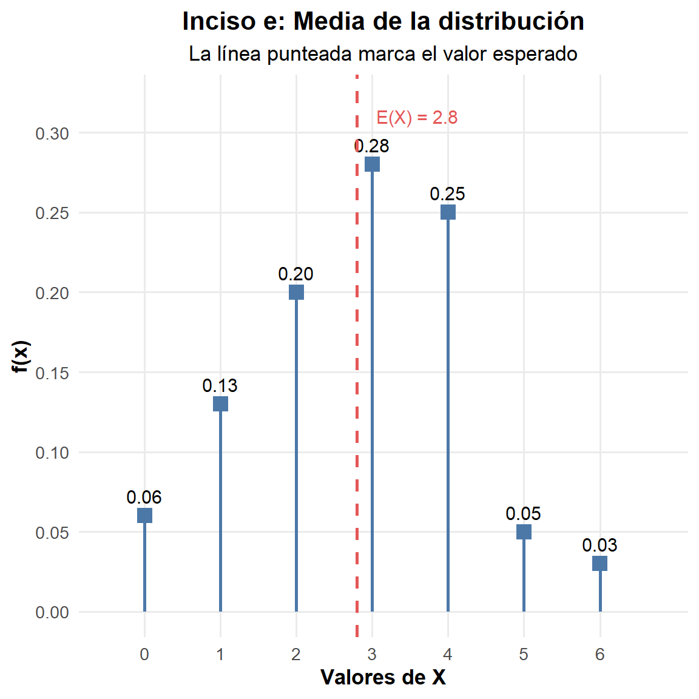
Interpretación: La gráfica muestra el valor esperado E(X) como una línea vertical que representa el centro de gravedad de la distribución. Este valor indica el promedio teórico del número de defectos importantes en un automóvil nuevo. Se observa que la mayor concentración de probabilidad se encuentra alrededor de este valor, lo que confirma que es una medida representativa del comportamiento de la variable.
Tabla de Distribución de probabilidad y función de distribución acumulada de X
tabla <- data.frame(
x = c(0, 1, 2, 3, 4, 5, 6, "∑f(x)"),
fx = c(0.06, 0.13, 0.20, 0.28, 0.25, 0.05, 0.03, 1.00),
Fx = c(0.06, 0.19, 0.39, 0.67, 0.92, 0.97, 1.00, "")
)
kbl(
tabla,
format = "html",
escape = FALSE,
align = "c",
col.names = c("x", "f(x)", "F(x)")
) %>%
add_header_above(
c("Distribución de probabilidad y función de distribución acumulada de X" = 3),
background = "#1F4E79",
color = "white",
bold = TRUE,
font_size = 18,
align = "center",
extra_css = "border:1px solid black;"
) %>%
kable_styling(
full_width = FALSE,
position = "center"
) %>%
row_spec(0, bold = TRUE, color = "white", background = "#5B9BD5",
extra_css = "border:1px solid black;") %>%
row_spec(seq(1, 7, 2), background = "#EAF2F8",
extra_css = "border:1px solid black;") %>%
row_spec(8, bold = TRUE, color = "white", background = "#C00000",
extra_css = "border:1px solid black;") %>%
column_spec(1:3, extra_css = "border:1px solid black;")| x | f(x) | F(x) |
|---|---|---|
| 0 | 0.06 | 0.06 |
| 1 | 0.13 | 0.19 |
| 2 | 0.20 | 0.39 |
| 3 | 0.28 | 0.67 |
| 4 | 0.25 | 0.92 |
| 5 | 0.05 | 0.97 |
| 6 | 0.03 | 1 |
| ∑f(x) | 1.00 |
Interpretación: La tabla muestra los valores posibles de la variable aleatoria X, junto con su función de probabilidad f(x) y su función de distribución acumulada F(x). Se observa que la mayor probabilidad se concentra en los valores intermedios, especialmente alrededor de x=3 y x=4, lo cual indica que los números de defectos más probables son esos. Además, la suma de las probabilidades f(x) es igual a 1, confirmando que la distribución está correctamente definida.
Gráficas de Distribución de probabilidad y función de distribución acumulada de X
# Datos
x <- 0:6
fx <- c(0.06, 0.13, 0.20, 0.28, 0.25, 0.05, 0.03)
df_fx <- data.frame(x = x, fx = fx)
ggplot(df_fx, aes(x = x, y = fx)) +
geom_point(shape = 15, size = 4, color = "#4C78A8") +
geom_segment(aes(xend = x, yend = 0), linewidth = 1, color = "#4C78A8") +
geom_text(aes(label = sprintf("%.2f", fx)), vjust = -0.6, size = 4) +
scale_x_continuous(breaks = 0:6, limits = c(-0.5, 6.5)) +
scale_y_continuous(limits = c(0, 0.32), breaks = seq(0, 0.30, 0.05)) +
labs(
title = "Función de probabilidad f(x)",
subtitle = "Distribución discreta del número de defectos importantes",
x = "Valores de X",
y = "f(x)"
) +
theme_minimal(base_size = 13) +
theme(
plot.title = element_text(face = "bold", hjust = 0.5),
plot.subtitle = element_text(hjust = 0.5),
axis.title = element_text(face = "bold"),
panel.grid.minor = element_blank()
)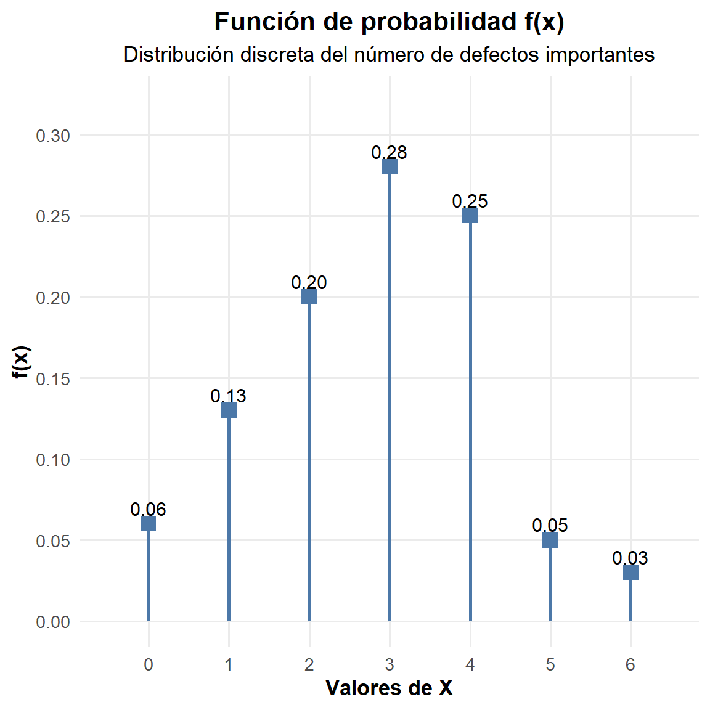
Interpretación: La función de probabilidad f(x) es discreta, muestra que los valores más probables del número de defectos importantes se encuentran en la zona central de la distribución. En particular, el valor con mayor probabilidad es x=3, seguido de x=4. Esto indica que es más común encontrar entre tres y cuatro defectos importantes que valores extremos como cero o seis.
# Datos
df_cdf <- data.frame(
x_inicio = c(0, 1, 2, 3, 4, 5),
x_fin = c(1, 2, 3, 4, 5, 6),
y = c(0.06, 0.19, 0.39, 0.67, 0.92, 0.97)
)
# Punto medio para ubicar etiquetas
df_cdf$xm <- (df_cdf$x_inicio + df_cdf$x_fin)/2
ggplot() +
theme_bw() +
scale_x_continuous(breaks = 0:6, limits = c(0, 6.5)) +
scale_y_continuous(breaks = seq(0,1,0.1), limits = c(0,1.05)) +
labs(
title = "Función de distribución acumulada F(x)",
subtitle = "Gráfica escalonada para una variable discreta",
x = "Valores de x",
y = "F(x)"
) +
# Tramos horizontales
geom_segment(
data = df_cdf,
aes(x = x_inicio, y = y, xend = x_fin, yend = y),
color = "#E45756",
linewidth = 1.2
) +
# Puntos
geom_point(data = df_cdf, aes(x = x_inicio, y = y),
shape = 16, size = 3, color = "#E45756") +
geom_point(data = df_cdf, aes(x = x_fin, y = y),
shape = 1, size = 3, stroke = 1.2, color = "#E45756") +
# Etiquetas sobre cada intervalo
geom_text(
data = df_cdf,
aes(x = xm, y = y, label = sprintf("%.2f", y)),
vjust = -0.8,
size = 4
) +
# Último tramo hasta 1
geom_segment(aes(x = 6, y = 1, xend = 6.5, yend = 1),
color = "#E45756", linewidth = 1.2) +
geom_point(aes(x = 6, y = 1),
shape = 16, size = 3, color = "#E45756") +
geom_text(aes(x = 6.25, y = 1, label = "1"),
vjust = -0.8,
size = 4)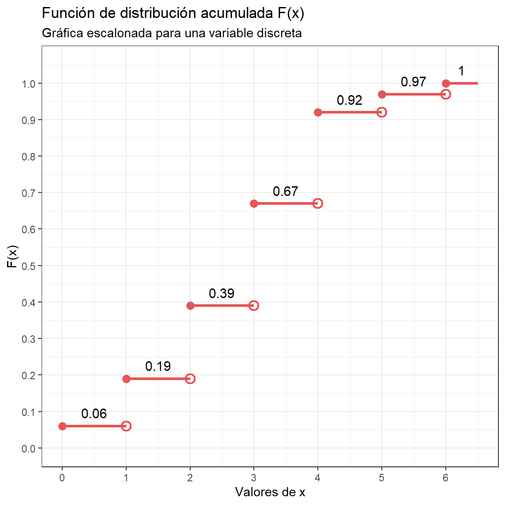
Interpretación: La gráfica de la función de distribución acumulada F(x) muestra cómo se va acumulando la probabilidad a medida que aumenta el número de defectos importantes. Su forma escalonada refleja que se trata de una variable aleatoria discreta. Se observa que la acumulación de probabilidad es más rápida en los valores intermedios, donde la función presenta saltos más grandes, lo que coincide con las probabilidades más altas de la distribución.
Sea X la variable aleatoria que representa la suma de resultados al lanzar dos dados.
Determinar el soporte de la variable aleatoria X.
Obtener la función de probabilidad de la variable y representar su diagrama de barras.
Hallar la función de distribución de X y representarla gráficamente.
Calcular la probabilidad de que la suma sea mayor que 4 y menor que 8.
Calcular la probabilidad de que la suma sea mayor o igual que 4 y menor o igual que 8.
Obtener el valor esperado y la desviación típica de la variable aleatoria X.
Solucion
El soporte de la variable aleatoria es:
Sop_X=\{2,3,4,5,6,7,8,9,10,11,12\}
Interpretación: El soporte de la variable aleatoria está dado por los valores \{2,3,4,5,6,7,8,9,10,11,12\}, lo que significa que la suma de los resultados de dos dados no puede ser menor que 2 ni mayor que 12.
df_a <- data.frame(
x = 2:12,
y = rep(1, 11)
)
ggplot(df_a, aes(x = x, y = y)) +
geom_point(shape = 15, size = 4, color = "#4C78A8") +
geom_segment(aes(xend = x, yend = 0), linewidth = 0.9, color = "#4C78A8") +
scale_x_continuous(breaks = 2:12, limits = c(1.5, 12.5)) +
scale_y_continuous(limits = c(0, 1.15), breaks = NULL) +
labs(
title = "Soporte de la variable aleatoria X",
subtitle = "Valores posibles de la suma de dos dados",
x = "Valores de X",
y = ""
) +
theme_minimal(base_size = 13) +
theme(
plot.title = element_text(face = "bold", hjust = 0.5),
plot.subtitle = element_text(hjust = 0.5),
axis.title.x = element_text(face = "bold"),
panel.grid.minor = element_blank()
)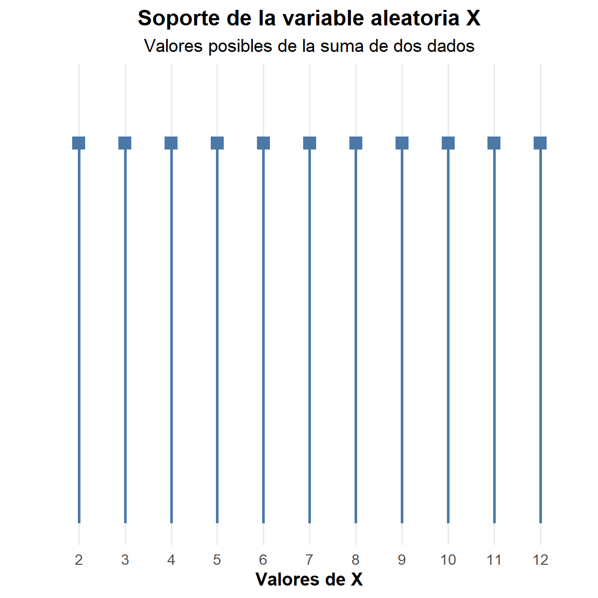
Interpretación:La gráfica del soporte muestra todos los valores posibles que puede tomar la variable aleatoria X, correspondientes a las sumas de dos dados. Se observa que la suma mínima posible es 2 y la máxima es 12, por lo que el soporte está formado por todos los enteros comprendidos entre esos dos valores.
La función de probabilidad es:
Forma en fracciones
Al lanzar dos dados, el espacio muestral está formado por pares ordenados:
(D_1, D_2)
donde cada dado puede tomar valores de 1 a 6.
Por lo tanto, existen:
6 \times 6 = 36 \text{ resultados equiprobables}
Cada resultado tiene probabilidad:
\frac{1}{36}
Se listan las parejas ordenadas que generan cada valor de X:
\begin{aligned} X=2 &: (1,1) \\ X=3 &: (1,2),(2,1) \\ X=4 &: (1,3),(2,2),(3,1) \\ X=5 &: (1,4),(2,3),(3,2),(4,1) \\ X=6 &: (1,5),(2,4),(3,3),(4,2),(5,1) \\ X=7 &: (1,6),(2,5),(3,4),(4,3),(5,2),(6,1) \\ X=8 &: (2,6),(3,5),(4,4),(5,3),(6,2) \\ X=9 &: (3,6),(4,5),(5,4),(6,3) \\ X=10 &: (4,6),(5,5),(6,4) \\ X=11 &: (5,6),(6,5) \\ X=12 &: (6,6) \end{aligned}
f(x)=\frac{\text{número de parejas que suman } x}{36}
f(x)= \begin{cases} \frac{1}{36} & x=2 \\ \frac{2}{36} & x=3 \\ \frac{3}{36} & x=4 \\ \frac{4}{36} & x=5 \\ \frac{5}{36} & x=6 \\ \frac{6}{36} & x=7 \\ \frac{5}{36} & x=8 \\ \frac{4}{36} & x=9 \\ \frac{3}{36} & x=10 \\ \frac{2}{36} & x=11 \\ \frac{1}{36} & x=12 \end{cases}
Forma en decimales (aproximados)
f(x)= \begin{cases} 0.03 & x=2 \\ 0.06 & x=3 \\ 0.08 & x=4 \\ 0.11 & x=5 \\ 0.14 & x=6 \\ 0.17 & x=7 \\ 0.14 & x=8 \\ 0.11 & x=9 \\ 0.08 & x=10 \\ 0.06 & x=11 \\ 0.03 & x=12 \end{cases}
Interpretación: La función de probabilidad f(x) describe la probabilidad de obtener cada suma posible al lanzar dos dados. Se observa que la suma más probable es 7, ya que puede obtenerse de más formas que cualquier otra. En cambio, las sumas extremas como 2 y 12 tienen menor probabilidad porque solo pueden formarse de una manera.
Diagrama de barras de f(x) en decimales (2 cifras)
# Datos aproximados a 2 decimales
x <- 2:12
fx <- round(c(1,2,3,4,5,6,5,4,3,2,1)/36, 2)
df_fx <- data.frame(x, fx)
ggplot(df_fx, aes(x = factor(x), y = fx)) +
geom_col(fill = "#4C78A8", color = "black", width = 0.65) +
geom_text(aes(label = sprintf("%.2f", fx)), vjust = -0.35, size = 4) +
scale_y_continuous(
limits = c(0, 0.18),
breaks = seq(0, 0.18, by = 0.02)
) +
labs(
title = "Diagrama de barras de f(x)",
x = "Valores de x",
y = "f(x)"
) +
theme_minimal(base_size = 13) +
theme(
plot.title = element_text(face = "bold", hjust = 0.5),
axis.title = element_text(face = "bold"),
panel.grid.minor = element_blank(),
panel.grid.major.x = element_blank()
)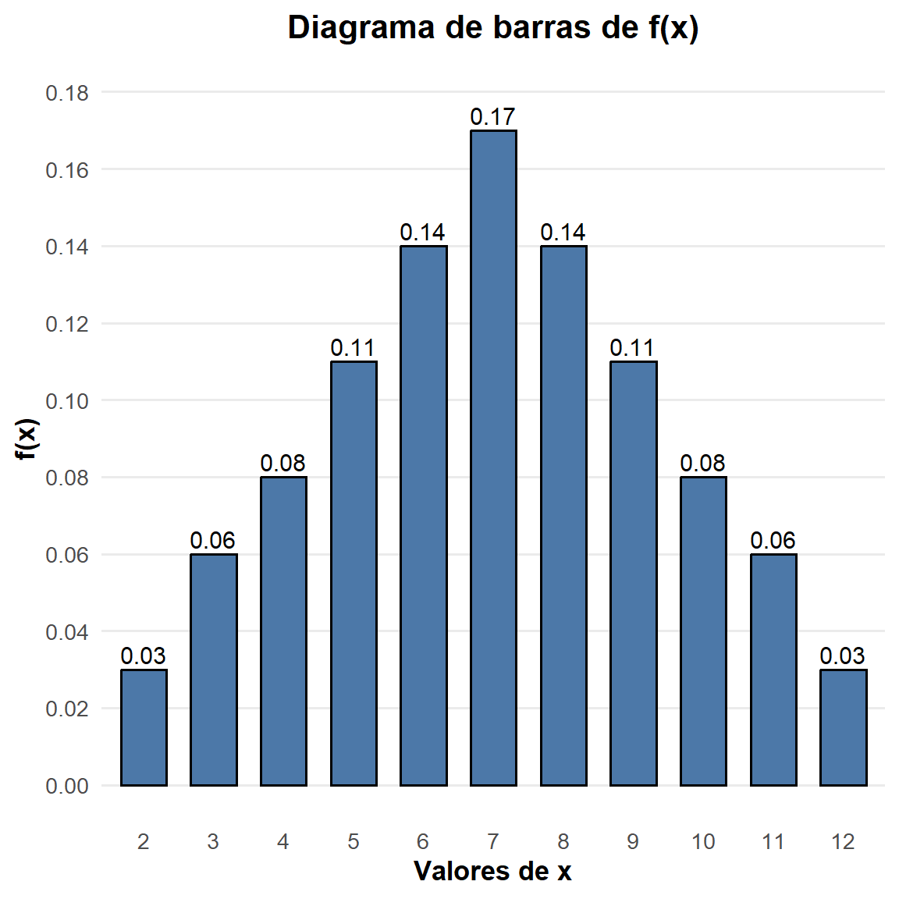
Diagrama de barras de f(x) en fracciones
# Datos en fracciones
x <- 2:12
fx <- c(1,2,3,4,5,6,5,4,3,2,1)/36
labels_frac <- c("1/36","2/36","3/36","4/36","5/36","6/36",
"5/36","4/36","3/36","2/36","1/36")
df <- data.frame(x, fx, labels_frac)
ggplot(df, aes(x=factor(x), y=fx)) +
geom_col(fill="#4C78A8", color="black") +
geom_text(aes(label=labels_frac), vjust=-0.4, size=4) +
scale_y_continuous(limits=c(0,0.18)) +
labs(
title="Diagrama de barras de f(x)",
x="Valores de x",
y="f(x)"
) +
theme_minimal() +
theme(plot.title=element_text(hjust=0.5, face="bold"))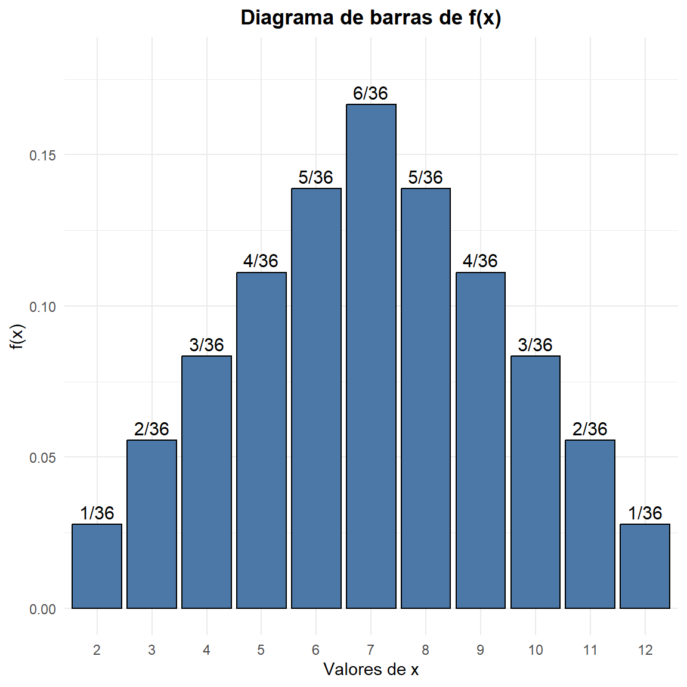
Interpretación: El diagrama de barras de la función de probabilidad muestra que la suma 7 es la más probable, ya que corresponde al mayor número de parejas ordenadas posibles. A medida que la suma se aleja de 7, la probabilidad disminuye, lo cual explica por qué los extremos 2 y 12 son los menos probables.
La función de distribución acumulada es:
Forma en fracciones
F(x)= \begin{cases} 0 & x<2 \\ \frac{1}{36} & 2 \le x < 3 \\ \frac{3}{36} & 3 \le x < 4 \\ \frac{6}{36} & 4 \le x < 5 \\ \frac{10}{36} & 5 \le x < 6 \\ \frac{15}{36} & 6 \le x < 7 \\ \frac{21}{36} & 7 \le x < 8 \\ \frac{26}{36} & 8 \le x < 9 \\ \frac{30}{36} & 9 \le x < 10 \\ \frac{33}{36} & 10 \le x < 11 \\ \frac{35}{36} & 11 \le x < 12 \\ 1 & 12 \le x \end{cases}
Forma en decimales (aproximados)
F(x)= \begin{cases} 0 & x<2 \\ 0.03 & 2 \le x < 3 \\ 0.08 & 3 \le x < 4 \\ 0.17 & 4 \le x < 5 \\ 0.28 & 5 \le x < 6 \\ 0.42 & 6 \le x < 7 \\ 0.58 & 7 \le x < 8 \\ 0.72 & 8 \le x < 9 \\ 0.83 & 9 \le x < 10 \\ 0.92 & 10 \le x < 11 \\ 0.97 & 11 \le x < 12 \\ 1 & 12 \le x \end{cases}
Interpretación: La función de distribución acumulada F(x) representa la probabilidad de obtener una suma menor o igual que un valor dado. A medida que el valor de x aumenta, la probabilidad acumulada también aumenta hasta llegar a 1, ya que finalmente se incluyen todos los resultados posibles.
Gráfica escalonada de la función de distribución acumulada de F(x) en decimales (2 cifras)
# Datos en decimales (aprox 2 cifras)
df_cdf <- data.frame(
x_inicio = c(2,3,4,5,6,7,8,9,10,11),
x_fin = c(3,4,5,6,7,8,9,10,11,12),
y = c(0.03,0.08,0.17,0.28,0.42,0.58,0.72,0.83,0.92,0.97)
)
# Punto medio para etiquetas
df_cdf$xm <- (df_cdf$x_inicio + df_cdf$x_fin)/2
ggplot() +
theme_bw() +
scale_x_continuous(breaks = 2:12, limits = c(2,12.5)) +
scale_y_continuous(breaks = seq(0,1,0.1), limits = c(0,1.05)) +
labs(
title = "Función de distribución acumulada F(x)",
subtitle = "Representación escalonada por intervalos",
x = "Valores de x",
y = "F(x)"
) +
# Tramos
geom_segment(
data = df_cdf,
aes(x = x_inicio, y = y, xend = x_fin, yend = y),
color = "#E45756",
linewidth = 1.2
) +
# Punto cerrado
geom_point(
data = df_cdf,
aes(x = x_inicio, y = y),
shape = 16, size = 3, color = "#E45756"
) +
# Punto abierto
geom_point(
data = df_cdf,
aes(x = x_fin, y = y),
shape = 1, size = 3, stroke = 1.2, color = "#E45756"
) +
# Etiquetas
geom_text(
data = df_cdf,
aes(x = xm, y = y, label = sprintf("%.2f", y)),
vjust = -0.8,
size = 4
) +
# Último tramo
geom_segment(aes(x = 12, y = 1, xend = 12.5, yend = 1),
color = "#E45756", linewidth = 1.2) +
geom_point(aes(x = 12, y = 1),
shape = 16, size = 3, color = "#E45756") +
geom_text(aes(x = 12.25, y = 1, label = "1"),
vjust = -0.8, size = 4)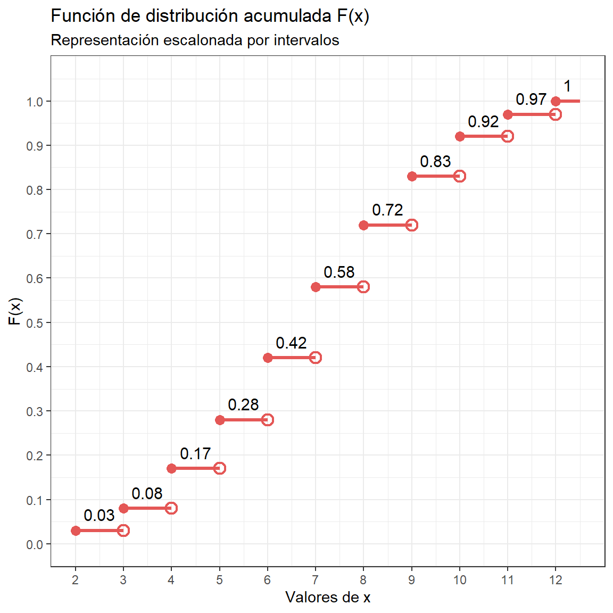
Gráfica escalonada de la función de distribución acumulada de F(x) en fracciones
# Datos en fracciones
df_cdf <- data.frame(
x_inicio = c(2,3,4,5,6,7,8,9,10,11),
x_fin = c(3,4,5,6,7,8,9,10,11,12),
y = c(1/36,3/36,6/36,10/36,15/36,
21/36,26/36,30/36,33/36,35/36),
label = c("1/36","3/36","6/36","10/36","15/36",
"21/36","26/36","30/36","33/36","35/36")
)
# Punto medio
df_cdf$xm <- (df_cdf$x_inicio + df_cdf$x_fin)/2
ggplot() +
theme_bw() +
scale_x_continuous(breaks = 2:12, limits = c(2,12.5)) +
scale_y_continuous(breaks = seq(0,1,0.1), limits = c(0,1.05)) +
labs(
title = "Función de distribución acumulada F(x)",
subtitle = "Representación escalonada por intervalos",
x = "Valores de x",
y = "F(x)"
) +
# Tramos
geom_segment(
data = df_cdf,
aes(x = x_inicio, y = y, xend = x_fin, yend = y),
color = "#E45756",
linewidth = 1.2
) +
# Punto cerrado
geom_point(
data = df_cdf,
aes(x = x_inicio, y = y),
shape = 16, size = 3, color = "#E45756"
) +
# Punto abierto
geom_point(
data = df_cdf,
aes(x = x_fin, y = y),
shape = 1, size = 3, stroke = 1.2, color = "#E45756"
) +
# Etiquetas
geom_text(
data = df_cdf,
aes(x = xm, y = y, label = label),
vjust = -0.8,
size = 4
) +
# Último tramo
geom_segment(aes(x = 12, y = 1, xend = 12.5, yend = 1),
color = "#E45756", linewidth = 1.2) +
geom_point(aes(x = 12, y = 1),
shape = 16, size = 3, color = "#E45756") +
geom_text(aes(x = 12.25, y = 1, label = "1"),
vjust = -0.8, size = 4)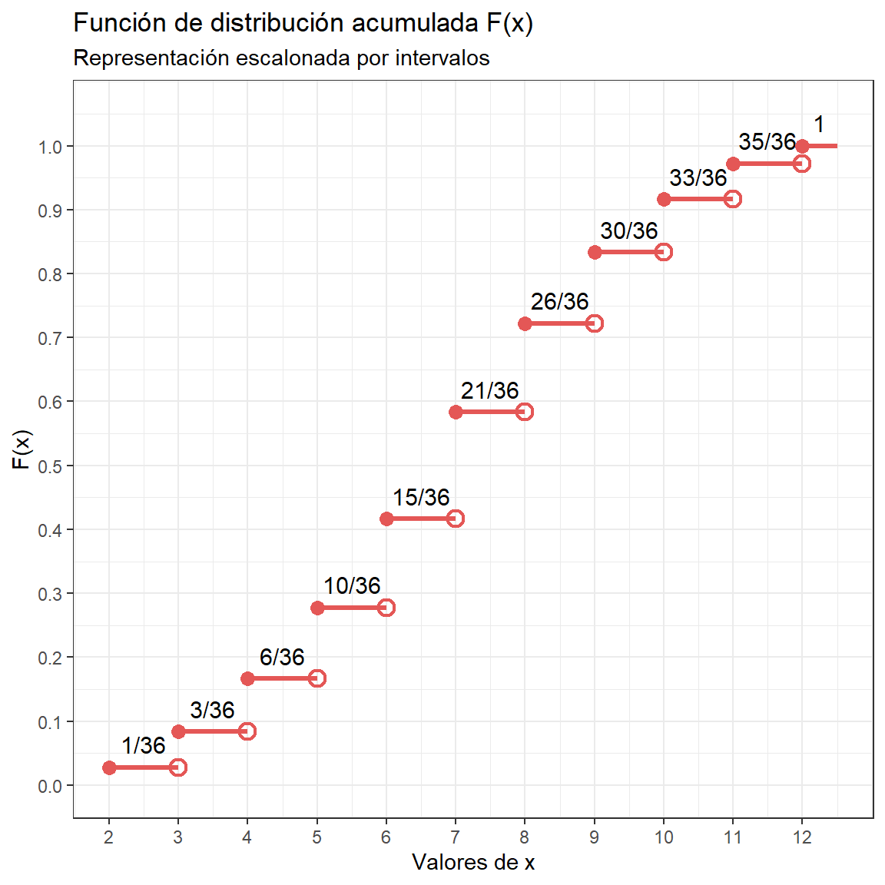
Interpretación: La gráfica escalonada de la función de distribución acumulada muestra cómo la probabilidad se va acumulando a medida que aumentan las sumas posibles. Los mayores incrementos se presentan alrededor de los valores centrales, especialmente cerca de 7, donde también se concentran las probabilidades más altas. Esto confirma que las sumas intermedias son más frecuentes que las sumas extremas.
P(4 < X < 8)= P(5 \leq X \leq 7)
= F(7) - F(4) = \frac{21}{36} - \frac{6}{36}
= \frac{15}{36} = \frac{5}{12} \approx 0.42
Interpretación: La probabilidad de que la suma de los dos dados sea mayor que 4 y menor que 8 es \frac{15}{36} \approx 0.42. Esto significa que existe aproximadamente un 42\% de probabilidad de obtener como resultado una suma igual a 5, 6 o 7.
df_d <- data.frame(
x = 2:12,
fx = c(1,2,3,4,5,6,5,4,3,2,1)/36,
destacado = ifelse(2:12 > 4 & 2:12 < 8, "Sí", "No")
)
ggplot(df_d, aes(x = x, y = fx, color = destacado)) +
geom_point(shape = 15, size = 4) +
geom_segment(aes(xend = x, yend = 0), linewidth = 1) +
geom_text(aes(label = sprintf("%.2f", fx)), vjust = -0.6, size = 4, show.legend = FALSE) +
scale_color_manual(values = c("No" = "gray70", "Sí" = "#59A14F")) +
scale_x_continuous(breaks = 2:12, limits = c(1.5, 12.5)) +
scale_y_continuous(limits = c(0, 0.19), breaks = seq(0, 0.18, 0.02)) +
labs(
title = "Inciso d: P(4 < X < 8)",
subtitle = "Se resaltan las sumas 5, 6 y 7",
x = "Valores de X",
y = "f(x)",
color = ""
) +
theme_minimal(base_size = 13) +
theme(
plot.title = element_text(face = "bold", hjust = 0.5),
plot.subtitle = element_text(hjust = 0.5),
axis.title = element_text(face = "bold"),
panel.grid.minor = element_blank()
)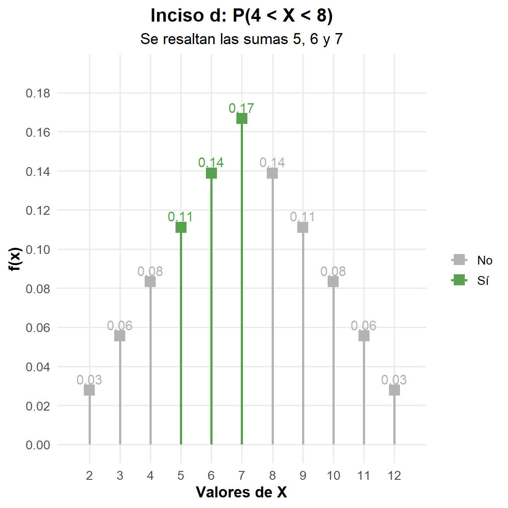
Interpretación:La gráfica resalta las sumas 5, 6 y 7, que son los únicos valores que cumplen la condición 4 < X < 8. La probabilidad pedida se interpreta como la suma de las probabilidades asociadas a esos tres resultados. Visualmente se aprecia que estas sumas concentran una parte importante de la distribución, por lo que P(4 < X < 8)=\frac{15}{36}\approx 0.42.
P(4 \le X \le 8)= F(8) - F(3)
= \frac{26}{36} - \frac{3}{36}
= \frac{23}{36} \approx 0.64
Interpretación: La probabilidad de que la suma de los dos dados sea mayor o igual que 4 y menor o igual que 8 es \frac{23}{36} \approx 0.64. Esto indica que existe aproximadamente un 64\% de probabilidad de obtener una suma comprendida entre 4 y 8, incluyendo ambos valores.
df_e <- data.frame(
x = 2:12,
fx = c(1,2,3,4,5,6,5,4,3,2,1)/36,
destacado = ifelse(2:12 >= 4 & 2:12 <= 8, "Sí", "No")
)
ggplot(df_e, aes(x = x, y = fx, color = destacado)) +
geom_point(shape = 15, size = 4) +
geom_segment(aes(xend = x, yend = 0), linewidth = 1) +
geom_text(aes(label = sprintf("%.2f", fx)), vjust = -0.6, size = 4, show.legend = FALSE) +
scale_color_manual(values = c("No" = "gray70", "Sí" = "#F28E2B")) +
scale_x_continuous(breaks = 2:12, limits = c(1.5, 12.5)) +
scale_y_continuous(limits = c(0, 0.19), breaks = seq(0, 0.18, 0.02)) +
labs(
title = "Inciso e: P(4 ≤ X ≤ 8)",
subtitle = "Se resaltan las sumas 4, 5, 6, 7 y 8",
x = "Valores de X",
y = "f(x)",
color = ""
) +
theme_minimal(base_size = 13) +
theme(
plot.title = element_text(face = "bold", hjust = 0.5),
plot.subtitle = element_text(hjust = 0.5),
axis.title = element_text(face = "bold"),
panel.grid.minor = element_blank()
)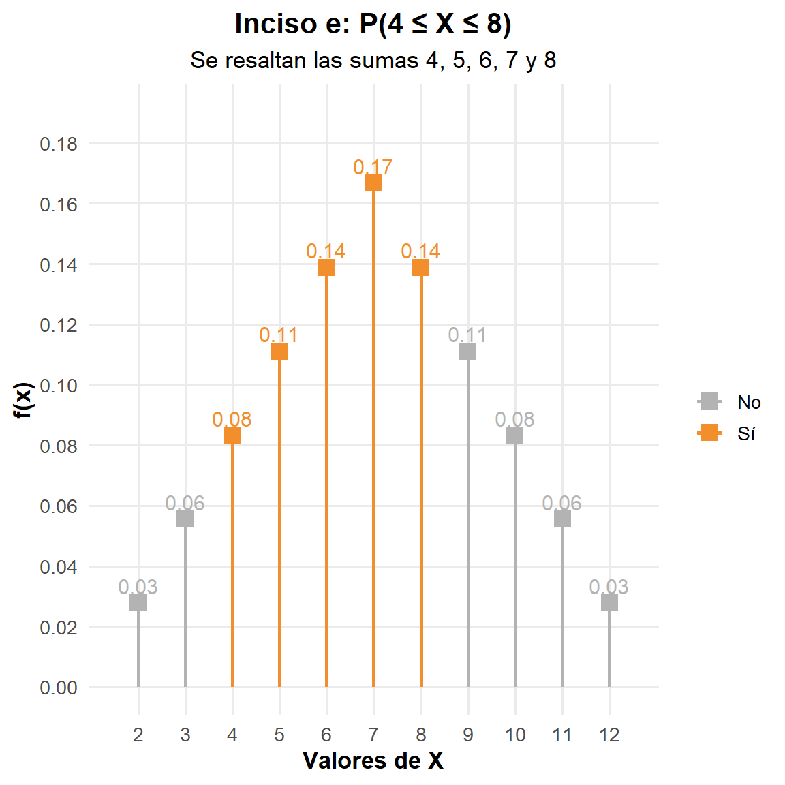
Interpretación:La gráfica destaca las sumas 4, 5, 6, 7 y 8, ya que todas pertenecen al intervalo cerrado 4 \leq X \leq 8. La probabilidad se obtiene sumando las probabilidades de esos cinco valores, lo que permite visualizar que este rango incluye una gran parte de los resultados más probables. Por tanto, P(4 \leq X \leq 8)=\frac{23}{36}\approx 0.64.
Esperanza Matematica o Valor Esperado
E(X)=\sum x f(x) E(X)=2\left(\frac{1}{36}\right)+3\left(\frac{2}{36}\right)+\cdots+11\left(\frac{2}{36}\right)+12\left(\frac{1}{36}\right)
=\frac{2+6+12+20+30+42+40+36+30+22+12}{36}
E(X)=\frac{252}{36}=7
Varianza
V(X) =\sigma^2 = E(X^2) - [E(X)]^2
E(X^2)=\sum x^2 f(x)
E(X^2)=2^2\left(\frac{1}{36}\right)+3^2\left(\frac{2}{36}\right)+\cdots+11^2\left(\frac{2}{36}\right)+12^2\left(\frac{1}{36}\right)
=\frac{4+18+48+100+180+294+320+324+300+242+144}{36}
E(X^2)=\frac{1974}{36}=54.83
V(X) = 54.83-7^2 = 54.83-49=5.83
Desviación típica o Estandar
\sigma=\sqrt{V(X)} \sigma=\sqrt{5.83}\approx 2.42
Coeficiente de variación
CV=\frac{\sigma}{E(X)} = \frac{2.42}{7}\approx 0.35
CV = 0.35 \times 100\% = 35\%
Interpretación: El valor esperado de la variable aleatoria es E(X)=7, por lo que, en promedio, la suma obtenida al lanzar dos dados es 7. La varianza mide la dispersión de los posibles resultados respecto a ese promedio, y la desviación típica \sigma \approx 2.42 indica cuánto se alejan, en promedio, las sumas obtenidas del valor esperado. Por su parte, el coeficiente de variación es aproximadamente 35\%, lo cual muestra una variabilidad relativa moderada respecto a la media.
x <- 2:12
fx <- c(1,2,3,4,5,6,5,4,3,2,1)/36
mu <- sum(x * fx)
df_f <- data.frame(x = x, fx = fx)
ggplot(df_f, aes(x = x, y = fx)) +
geom_point(shape = 15, size = 4, color = "#4C78A8") +
geom_segment(aes(xend = x, yend = 0), linewidth = 1, color = "#4C78A8") +
geom_text(aes(label = sprintf("%.2f", fx)), vjust = -0.7, size = 4) +
geom_vline(xintercept = mu, linetype = "dashed", color = "#E45756", linewidth = 1) +
annotate("text", x = mu + 0.25, y = 0.180,
label = paste0("E(X) = ", round(mu, 2)),
color = "#E45756", hjust = 0, size = 4) +
scale_x_continuous(breaks = 2:12, limits = c(1.5, 12.8)) +
scale_y_continuous(limits = c(0, 0.19), breaks = seq(0, 0.18, 0.02)) +
labs(
title = "Inciso f: Media de la distribución",
subtitle = "La línea punteada marca el valor esperado",
x = "Valores de X",
y = "f(x)"
) +
theme_minimal(base_size = 13) +
theme(
plot.title = element_text(face = "bold", hjust = 0.5),
plot.subtitle = element_text(hjust = 0.5),
axis.title = element_text(face = "bold"),
panel.grid.minor = element_blank()
)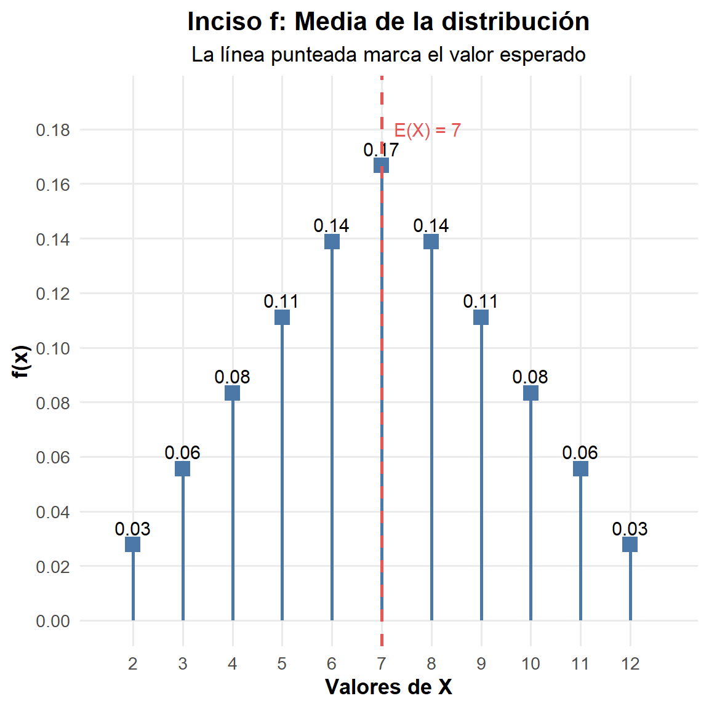
Interpretación:La gráfica muestra el valor esperado E(X)=7 como una línea vertical que indica el promedio teórico de la suma de dos dados. Este valor coincide con el centro de simetría de la distribución, lo que confirma que la media representa adecuadamente el comportamiento de la variable aleatoria.
Tabla de Distribución de probabilidad y función de distribución acumulada de X
tabla <- data.frame(
x = c(2, 3, 4, 5, 6, 7, 8, 9, 10, 11, 12, "∑f(x)"),
fx = c("1/36", "2/36", "3/36", "4/36", "5/36", "6/36", "5/36", "4/36", "3/36", "2/36", "1/36", "1"),
Fx = c("1/36", "3/36", "6/36", "10/36", "15/36", "21/36", "26/36", "30/36", "33/36", "35/36", "1", "")
)
kbl(
tabla,
format = "html",
escape = FALSE,
align = "c",
col.names = c("x", "f(x)", "F(x)")
) %>%
add_header_above(
c("Distribución de probabilidad y función de distribución acumulada de X" = 3),
background = "#1F4E79",
color = "white",
bold = TRUE,
font_size = 18,
align = "center",
extra_css = "border:1px solid black;"
) %>%
kable_styling(
full_width = FALSE,
position = "center"
) %>%
row_spec(
0,
bold = TRUE,
color = "white",
background = "#5B9BD5",
extra_css = "border:1px solid black;"
) %>%
row_spec(
c(1, 3, 5, 7, 9, 11),
background = "#EAF2F8",
extra_css = "border:1px solid black;"
) %>%
row_spec(
12,
bold = TRUE,
color = "white",
background = "#C00000",
extra_css = "border:1px solid black;"
) %>%
column_spec(1:3, extra_css = "border:1px solid black;")| x | f(x) | F(x) |
|---|---|---|
| 2 | 1/36 | 1/36 |
| 3 | 2/36 | 3/36 |
| 4 | 3/36 | 6/36 |
| 5 | 4/36 | 10/36 |
| 6 | 5/36 | 15/36 |
| 7 | 6/36 | 21/36 |
| 8 | 5/36 | 26/36 |
| 9 | 4/36 | 30/36 |
| 10 | 3/36 | 33/36 |
| 11 | 2/36 | 35/36 |
| 12 | 1/36 | 1 |
| ∑f(x) | 1 |
tabla <- data.frame(
x = c(2, 3, 4, 5, 6, 7, 8, 9, 10, 11, 12, "∑f(x)"),
fx = c(0.03, 0.06, 0.08, 0.11, 0.14, 0.17,
0.14, 0.11, 0.08, 0.06, 0.03, 1.01),
Fx = c(0.03, 0.09, 0.17, 0.28, 0.42, 0.59,
0.73, 0.84, 0.92, 0.98, 1.01, "")
)
kbl(
tabla,
format = "html",
escape = FALSE,
align = "c",
col.names = c("x", "f(x)", "F(x)")
) %>%
add_header_above(
c("Distribución de probabilidad y función de distribución acumulada de X" = 3),
background = "#1F4E79",
color = "white",
bold = TRUE,
font_size = 18,
align = "center",
extra_css = "border:1px solid black;"
) %>%
kable_styling(
full_width = FALSE,
position = "center"
) %>%
row_spec(0, bold = TRUE, color = "white", background = "#5B9BD5",
extra_css = "border:1px solid black;") %>%
row_spec(c(1,3,5,7,9,11), background = "#EAF2F8",
extra_css = "border:1px solid black;") %>%
row_spec(12, bold = TRUE, color = "white", background = "#C00000",
extra_css = "border:1px solid black;") %>%
column_spec(1:3, extra_css = "border:1px solid black;")| x | f(x) | F(x) |
|---|---|---|
| 2 | 0.03 | 0.03 |
| 3 | 0.06 | 0.09 |
| 4 | 0.08 | 0.17 |
| 5 | 0.11 | 0.28 |
| 6 | 0.14 | 0.42 |
| 7 | 0.17 | 0.59 |
| 8 | 0.14 | 0.73 |
| 9 | 0.11 | 0.84 |
| 10 | 0.08 | 0.92 |
| 11 | 0.06 | 0.98 |
| 12 | 0.03 | 1.01 |
| ∑f(x) | 1.01 |
Interpretación de la tabla: La tabla presenta los valores posibles de la suma de dos dados, junto con la función de probabilidad f(x) y la función de distribución acumulada F(x). Se observa que las probabilidades aumentan desde x=2 hasta alcanzar su máximo en x=7, y luego disminuyen de manera simétrica hasta x=12. Esto refleja que la distribución de la suma de dos dados es simétrica alrededor de 7. Además, la suma de las probabilidades es igual a 1, lo cual confirma que se trata de una distribución de probabilidad válida.
La variable aleatoria X tiene función de densidad dada por:
f(x)= \begin{cases} \frac{1}{3} & x \in (0,1) \\ \frac{1}{3} & x \in (2,4) \\ 0 & \text{en el resto} \end{cases}
Demostrar que f(x) es una función de densidad y representarla gráficamente.
Obtener la función de distribución de la variable aleatoria X y representarla gráficamente.
Calcular P(X < 0.6).
Calcular P(0.3 \le X \le 0.6).
Calcular P(0.6 < X < 3.4).
Obtener el rango intercuartílico de la variable aleatoria X.
Para demostrar que f(x) es una función de densidad, se deben verificar las siguientes condiciones:
1.No negatividad
Debe cumplirse que:
f(x)\ge 0 \quad \text{para todo } x
En este caso:
f(x)= \begin{cases} \frac{1}{3}, & x \in (0,1) \\ \frac{1}{3}, & x \in (2,4) \\ 0, & \text{en el resto} \end{cases}
Se observa que en los intervalos (0,1) y (2,4) la función toma el valor:
\frac{1}{3}>0
y en el resto de los valores toma:
0
Por lo tanto, en todos los casos se cumple que:
f(x)\ge 0
2. Integral total igual a 1
Además, debe cumplirse que:
\int_{-\infty}^{\infty} f(x)\,dx=1
Como la función es distinta de cero únicamente en los intervalos (0,1) y (2,4), se tiene:
\int_{-\infty}^{\infty} f(x)\,dx = \int_0^1 \frac{1}{3}\,dx + \int_2^4 \frac{1}{3}\,dx
Resolviendo cada integral:
\int_0^1 \frac{1}{3}\,dx=\frac{1}{3}(1-0)=\frac{1}{3}
\int_2^4 \frac{1}{3}\,dx=\frac{1}{3}(4-2)=\frac{2}{3}
Sumando:
\frac{1}{3}+\frac{2}{3}=1
Conclusión
Como se cumple que:
f(x)\ge 0
y además:
\int_{-\infty}^{\infty} f(x)\,dx=1
entonces:
f(x)
sí es una función de densidad.
Interpretación: La función nunca toma valores negativos y el área total bajo su gráfica es igual a 1, por lo que representa correctamente una distribución de probabilidad continua.
x <- seq(-0.5, 4.5, by = 0.01)
fx <- ifelse(x > 0 & x < 1, 1/3,
ifelse(x > 2 & x < 4, 1/3, 0))
df <- data.frame(x = x, fx = fx)
ggplot(df, aes(x = x, y = fx)) +
geom_line(linewidth = 1, color = "#4C78A8") +
geom_area(fill = "#4C78A8", alpha = 0.2) +
labs(
title = "Función de densidad f(x)",
x = "Valores de x",
y = "f(x)"
) +
theme_minimal()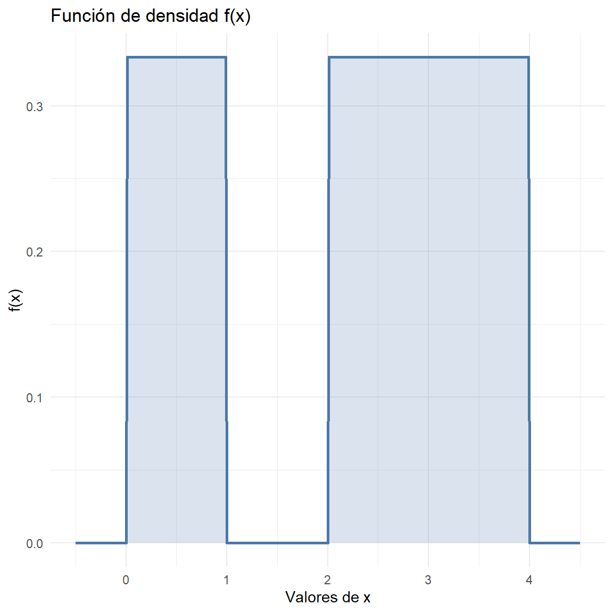
Interpretación de la gráfica de f(x): La densidad es constante e igual a \frac{1}{3} en los intervalos (0,1) y (2,4), y es nula fuera de ellos. Esto significa que la probabilidad solo se concentra en esos dos intervalos.
Por definición, la función de distribución acumulada de una variable aleatoria continua es:
F(x)=P(X \le x)=\int_{-\infty}^{x} f(t)\,dt
Dado que la densidad es:
f(x)= \begin{cases} \frac{1}{3}, & x \in (0,1) \\ \frac{1}{3}, & x \in (2,4) \\ 0, & \text{en el resto} \end{cases}
se debe construir F(x) por intervalos.
Caso 1: x \le 0
Como antes de 0 la densidad es nula, no se ha acumulado probabilidad:
F(x)=0
Caso 2: 0 < x < 1
En este intervalo se acumula probabilidad desde 0 hasta x:
F(x)=\int_0^x \frac{1}{3}\,dt
F(x)=\frac{1}{3}(x-0)=\frac{x}{3}
Caso 3: 1 \le x \le 2
Entre 1 y 2 la densidad es cero, por lo tanto la acumulada permanece constante.
Hasta x=1 ya se acumuló:
F(1)=\int_0^1 \frac{1}{3}\,dt=\frac{1}{3}
Entonces:
F(x)=\frac{1}{3}
Caso 4: 2 < x < 4
Hasta x=2 ya se tiene acumulado:
\frac{1}{3}
y ahora se suma la probabilidad desde 2 hasta x:
F(x)=\frac{1}{3}+\int_2^x \frac{1}{3}\,dt
F(x)=\frac{1}{3}+\frac{x-2}{3}
F(x)=\frac{x-1}{3} Caso 5: x \ge 4
A partir de x=4 ya se acumuló toda la probabilidad, por lo tanto:
F(x)=1
Resultado final
F(x)= \begin{cases} 0, & x \le 0 \\ \frac{x}{3}, & 0 < x < 1 \\ \frac{1}{3}, & 1 \le x \le 2 \\ \frac{x-1}{3}, & 2 < x < 4 \\ 1, & x \ge 4 \end{cases}
Interpretación: La función de distribución acumulada crece linealmente en los intervalos donde la densidad es positiva, es decir, en (0,1) y (2,4). En cambio, permanece constante entre 1 y 2, ya que en ese intervalo la densidad es cero.
x1 <- seq(0, 1, length.out = 200)
x2 <- seq(2, 4, length.out = 200)
df_F1_8 <- data.frame(x = x1, y = x1/3)
df_F2_8 <- data.frame(x = x2, y = (x2 - 1)/3)
ggplot() +
theme_bw(base_size = 13) +
scale_x_continuous(breaks = seq(0, 4, 0.5), limits = c(-0.2, 4.2)) +
scale_y_continuous(breaks = seq(0, 1, 0.1), limits = c(0, 1.05)) +
labs(
title = "Función de distribución acumulada F(x)",
subtitle = "Representación continua por tramos",
x = "Valores de x",
y = "F(x)"
) +
geom_segment(aes(x = -0.2, y = 0, xend = 0, yend = 0), color = "#E45756", linewidth = 1.2) +
geom_line(data = df_F1_8, aes(x = x, y = y), color = "#E45756", linewidth = 1.2) +
geom_segment(aes(x = 1, y = 1/3, xend = 2, yend = 1/3), color = "#E45756", linewidth = 1.2) +
geom_line(data = df_F2_8, aes(x = x, y = y), color = "#E45756", linewidth = 1.2) +
geom_segment(aes(x = 4, y = 1, xend = 4.2, yend = 1), color = "#E45756", linewidth = 1.2) +
geom_point(aes(x = 0, y = 0), shape = 16, size = 3, color = "#E45756") +
geom_point(aes(x = 1, y = 1/3), shape = 16, size = 3, color = "#E45756") +
geom_point(aes(x = 2, y = 1/3), shape = 16, size = 3, color = "#E45756") +
geom_point(aes(x = 4, y = 1), shape = 16, size = 3, color = "#E45756") +
theme(
plot.title = element_text(face = "bold", hjust = 0.5),
plot.subtitle = element_text(hjust = 0.5),
axis.title = element_text(face = "bold"),
panel.grid.minor = element_blank()
)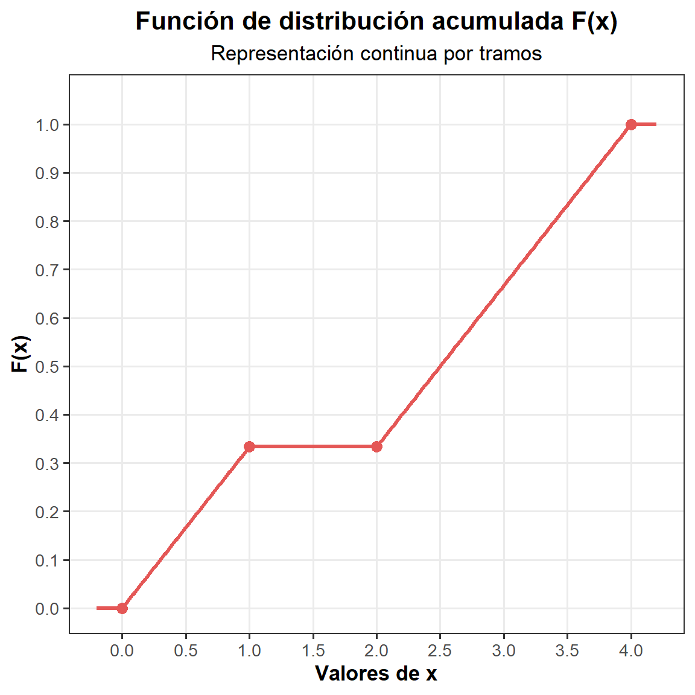
Interpretación de la gráfica de F(x): La función acumulada crece linealmente en los intervalos donde la densidad es positiva, es decir, en (0,1) y (2,4). En el intervalo [1,2] permanece constante en \frac{1}{3} porque allí no se acumula probabilidad.
Se desea calcular:
P(X < 0.6)
Por definición:
P(X < 0.6) = F(0.6)
Como 0.6 \in (0,1) F(x)=\frac{x}{3}
Entonces:
P(X < 0.6)=F(0.6)=\frac{0.6}{3}=0.2
Interpretación: La probabilidad de que X tome un valor menor que 0.6 es 0.2, es decir, un 20\%.
df_c <- df %>%
mutate(area_c = ifelse(x > 0 & x < 0.6, fx, 0))
ggplot(df_c, aes(x = x, y = fx)) +
geom_line(linewidth = 1, color = "#4C78A8") +
geom_area(aes(y = area_c), fill = "#72B7B2", alpha = 0.35) +
geom_vline(xintercept = 0.6, linetype = "dashed", color = "#E45756") +
labs(
title = "Inciso c: P(X < 0.6)",
subtitle = "Área bajo f(x) entre 0 y 0.6",
x = "x",
y = "f(x)"
) +
annotate("text", x = 0.35, y = 0.18, label = "P(X < 0.6) = 0.20", size = 4) +
scale_x_continuous(breaks = seq(0, 4, 0.5), limits = c(-0.5, 4.5)) +
scale_y_continuous(limits = c(0, 0.38), breaks = seq(0, 0.35, 0.05)) +
theme_minimal(base_size = 13) +
theme(
plot.title = element_text(face = "bold", hjust = 0.5),
plot.subtitle = element_text(hjust = 0.5),
axis.title = element_text(face = "bold")
)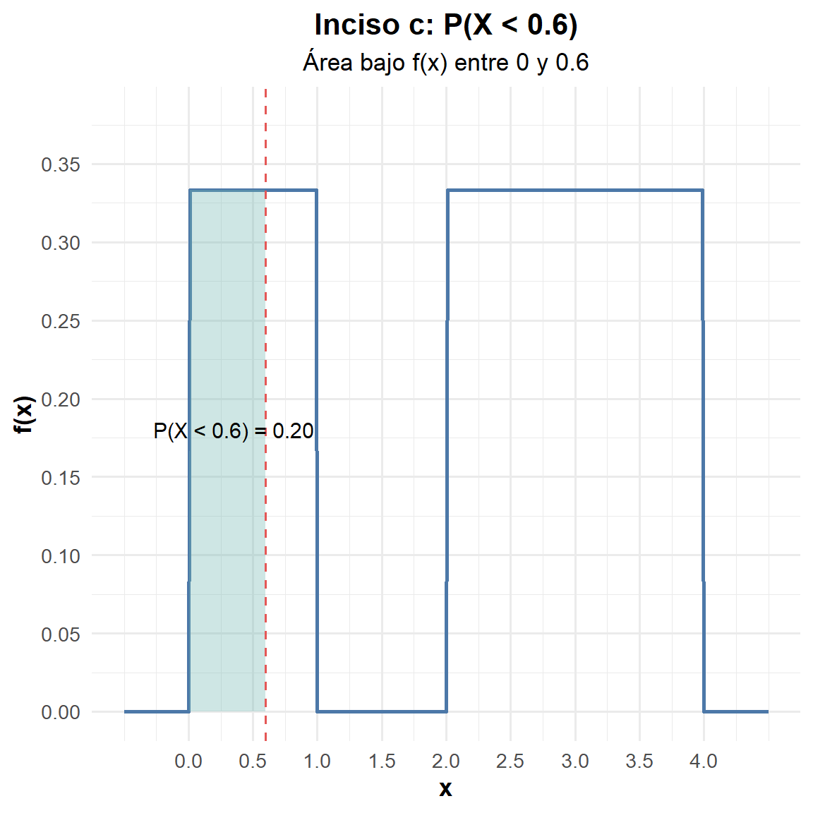
Interpretación: La gráfica permite visualizar la probabilidad como el área bajo la curva de la densidad desde 0 hasta 0.6. Dado que la densidad es constante en ese intervalo, el área corresponde a un rectángulo de base 0.6 y altura \frac{1}{3}. Esto muestra que la probabilidad es 0.2, lo que representa el 20\% de la distribución en ese tramo.
Se desea calcular:
P(0.3 \le X \le 0.6)
Para variables continuas:
P(0.3 \le X \le 0.6)=F(0.6)-F(0.3)
Como ambos valores están en el intervalo (0,1), se utiliza:
F(x)=\frac{x}{3}
Entonces:
F(0.6)=\frac{0.6}{3}, \quad F(0.3)=\frac{0.3}{3}
Por lo tanto:
P(0.3 \le X \le 0.6)=\frac{0.6}{3}-\frac{0.3}{3}
=\frac{0.3}{3}=0.1
Interpretación: La probabilidad de que X esté entre 0.3 y 0.6 es 0.1, es decir, un 10\%.
df_d <- df %>%
mutate(area_d = ifelse(x >= 0.3 & x <= 0.6, fx, 0))
ggplot(df_d, aes(x = x, y = fx)) +
geom_line(linewidth = 1, color = "#4C78A8") +
geom_area(aes(y = area_d), fill = "#F28E2B", alpha = 0.35) +
geom_vline(xintercept = c(0.3, 0.6), linetype = "dashed", color = "#E45756") +
labs(
title = "Inciso d: P(0.3 ≤ X ≤ 0.6)",
subtitle = "Área bajo f(x) entre 0.3 y 0.6",
x = "x",
y = "f(x)"
) +
annotate("text", x = 0.45, y = 0.18, label = "P(0.3 ≤ X ≤ 0.6) = 0.10", size = 4) +
scale_x_continuous(breaks = seq(0, 4, 0.5), limits = c(-0.5, 4.5)) +
scale_y_continuous(limits = c(0, 0.38), breaks = seq(0, 0.35, 0.05)) +
theme_minimal(base_size = 13) +
theme(
plot.title = element_text(face = "bold", hjust = 0.5),
plot.subtitle = element_text(hjust = 0.5),
axis.title = element_text(face = "bold")
)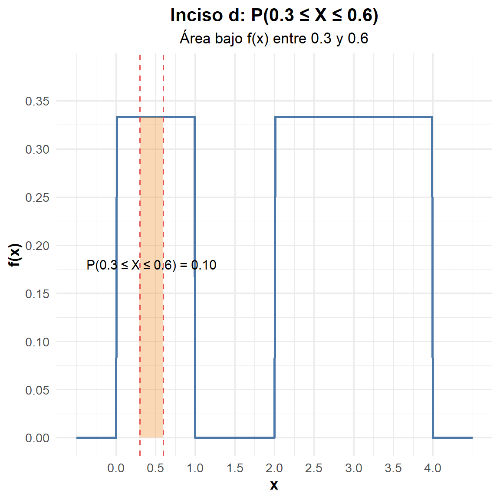
Interpretación:La gráfica muestra que la probabilidad corresponde al área bajo la curva de la densidad entre 0.3 y 0.6. Como la densidad es constante en ese intervalo, el área es proporcional a la longitud del intervalo. Esto permite observar que la probabilidad es pequeña, ya que el intervalo es corto dentro del rango total, resultando en un valor de 0.1.
Se desea calcular:
P(0.6 < X < 3.4)
Por definición:
P(0.6 < X < 3.4)=F(3.4)-F(0.6) Como 3.4 \in (2,4), se utiliza:
F(x)=\frac{x-1}{3}
Como 0.6 \in (0,1), se utiliza:
F(x)=\frac{x}{3}
Entonces:
F(3.4)=\frac{3.4-1}{3}=\frac{2.4}{3}=0.8
F(0.6)=\frac{0.6}{3}= 0.2
Resultado final
P(0.6 < X < 3.4)=0.8-0.2=0.6
Interpretación: La probabilidad de que X tome un valor entre 0.6 y 3.4 es 0.6, es decir, un 60\%.
df_e <- df %>%
mutate(area_e = ifelse((x > 0.6 & x < 1) | (x > 2 & x < 3.4), fx, 0))
ggplot(df_e, aes(x = x, y = fx)) +
geom_line(linewidth = 1, color = "#4C78A8") +
geom_area(aes(y = area_e), fill = "#59A14F", alpha = 0.35) +
geom_vline(xintercept = c(0.6, 3.4), linetype = "dashed", color = "#E45756") +
labs(
title = "Inciso e: P(0.6 < X < 3.4)",
subtitle = "Áreas bajo f(x) en los intervalos relevantes",
x = "x",
y = "f(x)"
) +
annotate("text", x = 2.0, y = 0.18, label = "P(0.6 < X < 3.4) = 0.60", size = 4) +
scale_x_continuous(breaks = seq(0, 4, 0.5), limits = c(-0.5, 4.5)) +
scale_y_continuous(limits = c(0, 0.38), breaks = seq(0, 0.35, 0.05)) +
theme_minimal(base_size = 13) +
theme(
plot.title = element_text(face = "bold", hjust = 0.5),
plot.subtitle = element_text(hjust = 0.5),
axis.title = element_text(face = "bold")
)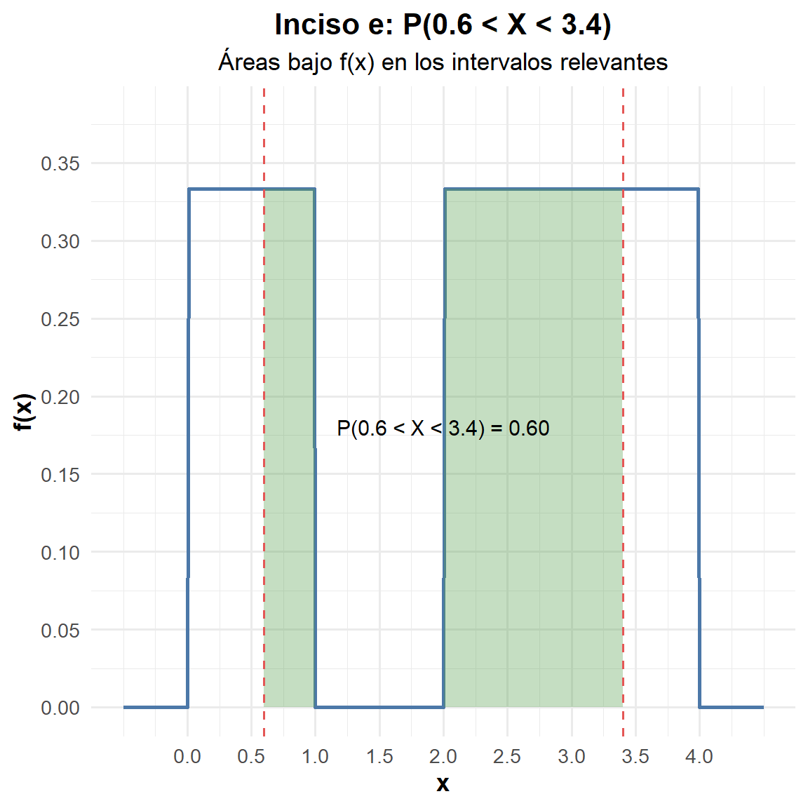
Interpretación: La gráfica muestra que la probabilidad se obtiene sumando dos áreas: una desde 0.6 hasta 1, y otra desde 2 hasta 3.4, ya que entre 1 y 2 no hay densidad. Esto refleja que la probabilidad se distribuye en dos regiones separadas. En conjunto, estas áreas representan el 60\% de la distribución, lo que indica que una parte importante de los valores de la variable se encuentra en ese rango.
Se desea obtener el rango intercuartílico de la variable aleatoria X.
Por definición:
RIQ = Q_3 - Q_1
donde:
Estos cuartiles se obtienen a partir de la función de distribución acumulada, resolviendo:
F(Q_1)=0.25
F(Q_3)=0.75
Paso 1: recordar la función de distribución acumulada
F(x)= \begin{cases} 0, & x \le 0 \\ \frac{x}{3}, & 0<x<1 \\ \frac{1}{3}, & 1\le x\le 2 \\ \frac{x-1}{3}, & 2<x<4 \\ 1, & x\ge 4 \end{cases}
Paso 2: calcular Q_1
Se busca el valor que satisface:
F(Q_1)=0.25 Como:
0.25 < \frac{1}{3}
Entonces Q_1 se encuentra en el intervalo (0,1), donde:
F(x)=\frac{x}{3}
Por lo tanto:
\frac{Q_1}{3}=0.25
Despejando:
Q_1=0.25 \times 3=0.75
Paso 3: calcular Q_3
Se busca el valor que satisface:
F(Q_3)=0.75 Como:
0.75 > \frac{1}{3}
Entonces Q_3 se encuentra en el intervalo (2,4), donde:
F(x)=\frac{x-1}{3} Por lo tanto:
\frac{Q_3-1}{3}=0.75 Despejando:
Q_3-1=2.25 Q_3=3.25
Paso 4: calcular el rango intercuartílico
RIQ = Q_3 - Q_1
RIQ = 3.25 - 0.75 = 2.5 Resultado: El rango intercuartílico es:
RIQ = 2.5
Interpretación: El 50\% central de los valores de la variable aleatoria X se encuentra en un intervalo de amplitud 2.5.
x <- seq(-0.5, 4.5, by = 0.01)
Fx <- ifelse(x <= 0, 0,
ifelse(x > 0 & x < 1, x/3,
ifelse(x >= 1 & x <= 2, 1/3,
ifelse(x > 2 & x < 4, (x - 1)/3, 1))))
df_8 <- data.frame(x = x, Fx = Fx)
ggplot(df_8, aes(x = x, y = Fx)) +
geom_line(linewidth = 1, color = "#E45756") +
geom_hline(yintercept = c(0.25, 0.75), linetype = "dashed", color = "#72B7B2") +
geom_vline(xintercept = c(0.75, 3.25), linetype = "dashed", color = "#4C78A8") +
geom_point(aes(x = 0.75, y = 0.25), color = "#4C78A8", size = 3) +
geom_point(aes(x = 3.25, y = 0.75), color = "#4C78A8", size = 3) +
annotate("text", x = 0.9, y = 0.15, label = "Q1 = 0.75", size = 4) +
annotate("text", x = 3.35, y = 0.66, label = "Q3 = 3.25", size = 4) +
labs(
title = "Inciso f: Cuartiles sobre F(x)",
subtitle = "Ubicación de Q1 y Q3",
x = "x",
y = "F(x)"
) +
scale_x_continuous(breaks = seq(0, 4, 0.5), limits = c(-0.5, 4.5)) +
scale_y_continuous(limits = c(0, 1.05), breaks = seq(0, 1, 0.1)) +
theme_minimal(base_size = 13) +
theme(
plot.title = element_text(face = "bold", hjust = 0.5),
plot.subtitle = element_text(hjust = 0.5),
axis.title = element_text(face = "bold")
)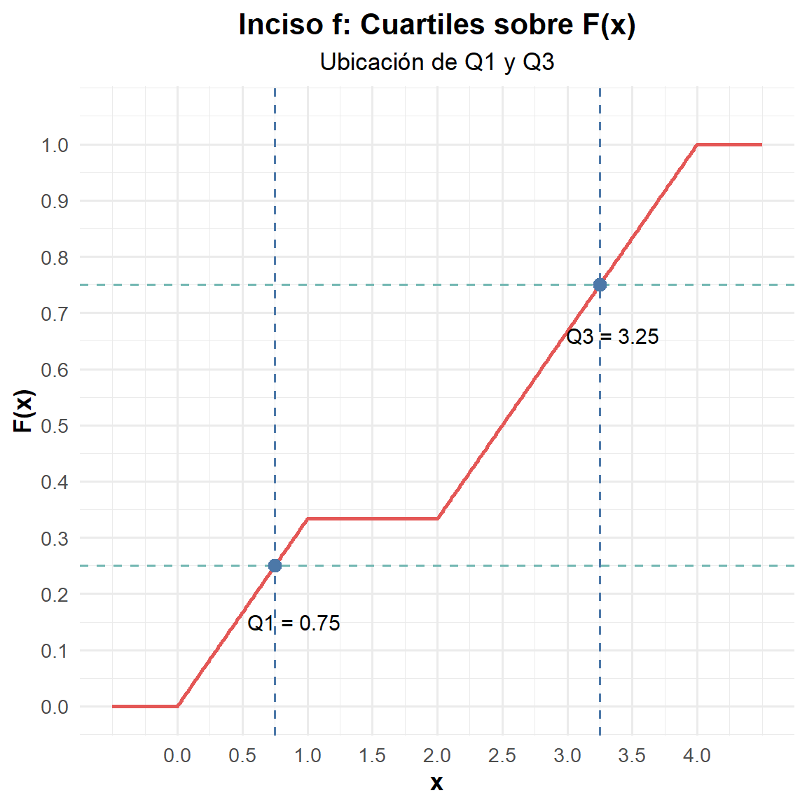
Interpretación:La gráfica de la función de distribución acumulada permite ubicar los cuartiles como los valores donde F(x)=0.25 y F(x)=0.75. Se observa que el primer cuartil se encuentra en el intervalo (0,1), mientras que el tercer cuartil se ubica en (2,4). Esto indica que el 50\% central de los datos está distribuido en dos regiones separadas, y que el rango intercuartílico tiene una amplitud de 2.5.
Esperanza matemática
Por definición:
E(X)=\int_{-\infty}^{\infty} x f(x)\,dx
Como la función es distinta de cero solo en (0,1) y (2,4):
E(X)=\int_0^1 x \cdot \frac{1}{3}\,dx + \int_2^4 x \cdot \frac{1}{3}\,dx
=\frac{1}{3}\int_0^1 x\,dx + \frac{1}{3}\int_2^4 x\,dx
Calculando:
\int_0^1 x\,dx=\frac{1}{2}
\int_2^4 x\,dx=\frac{x^2}{2}\Big|_2^4=\frac{16}{2}-\frac{4}{2}=8-2=6
Entonces:
E(X)=\frac{1}{3}\left(\frac{1}{2}+6\right)=\frac{1}{3}\cdot \frac{13}{2}=\frac{13}{6}
E(X)\approx 2.17
Varianza
V(X)=E(X^2)-[E(X)]^2
E(X^2)=\int x^2 f(x)\,dx
E(X^2)=\frac{1}{3}\int_0^1 x^2 dx + \frac{1}{3}\int_2^4 x^2 dx
Calculando:
\int_0^1 x^2 dx=\frac{1}{3}
\int_2^4 x^2 dx=\frac{x^3}{3}\Big|_2^4=\frac{64}{3}-\frac{8}{3}=\frac{56}{3}
Entonces:
E(X^2)=\frac{1}{3}\left(\frac{1}{3}+\frac{56}{3}\right)=\frac{57}{9}=\frac{19}{3}
V(X)=\frac{19}{3}-\left(\frac{13}{6}\right)^2
=\frac{19}{3}-\frac{169}{36}
=\frac{228}{36}-\frac{169}{36}=\frac{59}{36}
V(X)\approx 1.64
Desviación tipica o Estandar
\sigma=\sqrt{V(X)}=\sqrt{\frac{59}{36}}=\frac{\sqrt{59}}{6}
\sigma \approx 1.28
Coeficiente de variación
CV=\frac{\sigma}{\mu}
CV=\frac{1.28}{2.17}\approx 0.59
En porcentaje:
CV=0.59 \times 100\% = 59\%
Interpretación
# Secuencia
x <- seq(-0.5, 4.5, by = 0.01)
# Densidad
fx <- ifelse(x > 0 & x < 1, 1/3,
ifelse(x > 2 & x < 4, 1/3, 0))
# Data frame
df <- data.frame(x = x, fx = fx)
# Esperanza
mu <- 13/6
ggplot(df, aes(x = x, y = fx)) +
geom_line(linewidth = 1, color = "#4C78A8") +
geom_area(fill = "#4C78A8", alpha = 0.2) +
# Línea de la media
geom_vline(xintercept = mu, linetype = "dashed",
color = "#E45756", linewidth = 1) +
# Etiqueta
annotate("text",
x = mu + 0.2, y = 0.30,
label = paste0("E(X) = ", round(mu, 2)),
color = "#E45756",
size = 4, hjust = 0) +
labs(
title = "Esperanza matemática de la distribución",
subtitle = "La línea punteada indica el valor esperado",
x = "x",
y = "f(x)"
) +
scale_x_continuous(breaks = seq(0, 4, 0.5), limits = c(-0.5, 4.5)) +
scale_y_continuous(limits = c(0, 0.38), breaks = seq(0, 0.35, 0.05)) +
theme_minimal(base_size = 13) +
theme(
plot.title = element_text(face = "bold", hjust = 0.5),
plot.subtitle = element_text(hjust = 0.5),
axis.title = element_text(face = "bold")
)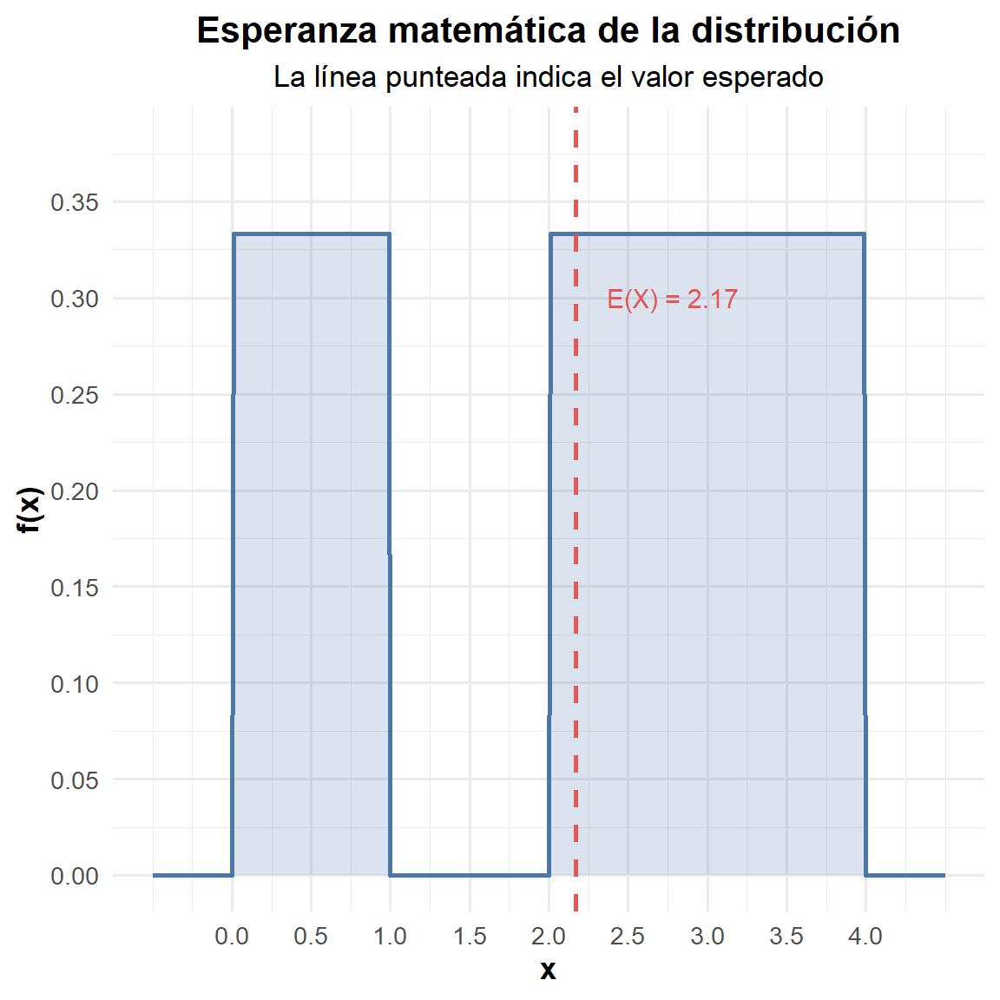
InterpretaciónLa gráfica de la densidad permite interpretar la esperanza matemática como el punto de equilibrio de la distribución. Debido a que la mayor extensión del intervalo se encuentra entre 2 y 4, el valor esperado se desplaza hacia la derecha. Esto indica que, en promedio, los valores de la variable tienden a ser mayores que 2, situándose alrededor de 2.17.
Tabla de Función de densidad y función de distribución acumulada de X
tabla <- data.frame(
intervalo = c("x ≤ 0", "0 < x < 1", "1 ≤ x ≤ 2", "2 < x < 4", "x ≥ 4"),
fx = c("0", "1/3", "0", "1/3", "0"),
Fx = c("0", "x/3", "1/3", "(x-1)/3", "1")
)
kbl(
tabla,
format = "html",
escape = FALSE,
align = "c",
col.names = c("Intervalo de x", "f(x)", "F(x)")
) %>%
add_header_above(
c("Función de densidad y función de distribución acumulada de X" = 3),
background = "#1F4E79",
color = "white",
bold = TRUE,
font_size = 18,
align = "center",
extra_css = "border:1px solid black;"
) %>%
kable_styling(
full_width = FALSE,
position = "center"
) %>%
row_spec(
0,
bold = TRUE,
color = "white",
background = "#5B9BD5",
extra_css = "border:1px solid black;"
) %>%
row_spec(
c(1,3,5),
background = "#EAF2F8",
extra_css = "border:1px solid black;"
) %>%
row_spec(
c(2,4),
extra_css = "border:1px solid black;"
) %>%
column_spec(1:3, extra_css = "border:1px solid black;")| Intervalo de x | f(x) | F(x) |
|---|---|---|
| x ≤ 0 | 0 | 0 |
| 0 < x < 1 | 1/3 | x/3 |
| 1 ≤ x ≤ 2 | 0 | 1/3 |
| 2 < x < 4 | 1/3 | (x-1)/3 |
| x ≥ 4 | 0 | 1 |
Interpretación de la tabla: La densidad toma el valor constante \frac{1}{3} en los intervalos (0,1) y (2,4), y es cero fuera de ellos. La función de distribución acumulada crece linealmente donde la densidad es positiva y permanece constante donde no se acumula probabilidad.
La variable aleatoria X tiene función de densidad dada por:
f(x)= \begin{cases} x & 0 < x < 1 \\ 2-x & 1 \le x < 2 \\ 0 & \text{en cualquier otra parte} \end{cases}
Demostrar que f(x) es una función de densidad y representarla gráficamente.
Obtener la función de distribución de la variable aleatoria X y representarla gráficamente.
Calcular el valor esperado y la varianza de X.
Hallar los percentiles 30 y 70 de la distribución.
Solucion
Para demostrar que f(x) es una función de densidad, se deben verificar las siguientes condiciones:
1. No negatividad
f(x)\ge 0 \quad \text{para todo } x
En este caso:
Por lo tanto:
f(x)\ge 0
2. Integral total igual a 1
\int_{-\infty}^{\infty} f(x)\,dx = \int_0^1 x\,dx+\int_1^2 (2-x)\,dx
= \left[\frac{x^2}{2}\right]_0^1+\left[2x-\frac{x^2}{2}\right]_1^2
=\frac{1}{2}+\frac{1}{2}=1
Resultado: f(x) sí es una función de densidad.
x1 <- seq(0, 1, length.out = 200)
x2 <- seq(1, 2, length.out = 200)
df_fx1 <- data.frame(x = x1, y = x1)
df_fx2 <- data.frame(x = x2, y = 2 - x2)
ggplot() +
geom_area(data = df_fx1, aes(x = x, y = y), fill = "#4C78A8", alpha = 0.20) +
geom_area(data = df_fx2, aes(x = x, y = y), fill = "#4C78A8", alpha = 0.20) +
# Líneas
geom_line(data = df_fx1, aes(x = x, y = y), color = "#4C78A8", linewidth = 1.2) +
geom_line(data = df_fx2, aes(x = x, y = y), color = "#4C78A8", linewidth = 1.2) +
# Ejes fuera del soporte
geom_segment(aes(x = -0.2, xend = 0, y = 0, yend = 0), color = "black") +
geom_segment(aes(x = 2, xend = 2.2, y = 0, yend = 0), color = "black") +
# Puntos importantes
geom_point(aes(x = 0, y = 0), shape = 1, size = 3, stroke = 1.2, color = "#4C78A8") +
geom_point(aes(x = 1, y = 1), shape = 16, size = 3, color = "#4C78A8") +
geom_point(aes(x = 2, y = 0), shape = 1, size = 3, stroke = 1.2, color = "#4C78A8") +
scale_x_continuous(breaks = seq(0, 2, 0.25), limits = c(-0.1, 2.1)) +
scale_y_continuous(breaks = seq(0, 1, 0.1), limits = c(0, 1.05)) +
labs(
title = "Función de densidad f(x)",
subtitle = "Distribución triangular en (0,2) con área bajo la curva",
x = "Valores de x",
y = "f(x)"
) +
theme_minimal(base_size = 13) +
theme(
plot.title = element_text(face = "bold", hjust = 0.5),
plot.subtitle = element_text(hjust = 0.5),
axis.title = element_text(face = "bold")
)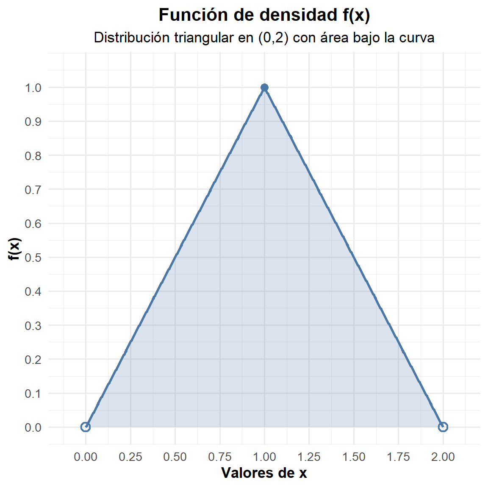
Interpretación: La densidad es triangular, positiva en (0,2) y simétrica alrededor de x=1.
Por definición, la función de distribución acumulada es:
F(x)=P(X\le x)=\int_{-\infty}^{x} f(t)\,dt
Se construye por intervalos.
Caso 1: x\le 0
Antes de 0 no se acumula probabilidad, por tanto:
F(x)=0
Caso 2: 0<x<1
En este intervalo:
F(x)=\int_0^x t\,dt
F(x)=\left[\frac{t^2}{2}\right]_0^x=\frac{x^2}{2}
Caso 3: 1\le x<2
Aquí ya se acumuló el área desde 0 hasta 1, que vale:
\int_0^1 t\,dt=\frac{1}{2}
Luego se suma el área desde 1 hasta x:
F(x)=\frac{1}{2}+\int_1^x (2-t)\,dt
F(x)=\frac{1}{2}+\left[2t-\frac{t^2}{2}\right]_1^x
F(x)=\frac{1}{2}+\left(2x-\frac{x^2}{2}\right)-\left(2-\frac{1}{2}\right)
F(x)=2x-\frac{x^2}{2}-1
Una forma equivalente es:
F(x)=1-\frac{(2-x)^2}{2}
Caso 4: x\ge 2
A partir de 2 ya se acumuló toda la probabilidad:
F(x)=1
Resultado final
F(x)= \begin{cases} 0, & x\le 0 \\[4pt] \dfrac{x^2}{2}, & 0<x<1 \\[6pt] 1-\dfrac{(2-x)^2}{2}, & 1\le x<2 \\[6pt] 1, & x\ge 2 \end{cases}
x1 <- seq(0, 1, length.out = 200)
x2 <- seq(1, 2, length.out = 200)
df_F1 <- data.frame(x = x1, y = x1^2 / 2)
df_F2 <- data.frame(x = x2, y = 1 - ((2 - x2)^2)/2)
ggplot() +
# Tramo antes de 0
geom_segment(aes(x = -0.2, xend = 0, y = 0, yend = 0), color = "#E45756", linewidth = 1.2) +
# Curvas
geom_line(data = df_F1, aes(x = x, y = y), color = "#E45756", linewidth = 1.2) +
geom_line(data = df_F2, aes(x = x, y = y), color = "#E45756", linewidth = 1.2) +
# Tramo después de 2
geom_segment(aes(x = 2, xend = 2.2, y = 1, yend = 1), color = "#E45756", linewidth = 1.2) +
# Puntos importantes
geom_point(aes(x = 0, y = 0), shape = 16, size = 3, color = "#E45756") +
geom_point(aes(x = 1, y = 0.5), shape = 16, size = 3, color = "#E45756") +
geom_point(aes(x = 2, y = 1), shape = 16, size = 3, color = "#E45756") +
scale_x_continuous(breaks = seq(0, 2, 0.25), limits = c(-0.1, 2.1)) +
scale_y_continuous(breaks = seq(0, 1, 0.1), limits = c(0, 1.05)) +
labs(
title = "Función de distribución acumulada F(x)",
subtitle = "Función continua creciente",
x = "Valores de x",
y = "F(x)"
) +
theme_bw(base_size = 13) +
theme(
plot.title = element_text(face = "bold", hjust = 0.5),
plot.subtitle = element_text(hjust = 0.5),
axis.title = element_text(face = "bold")
)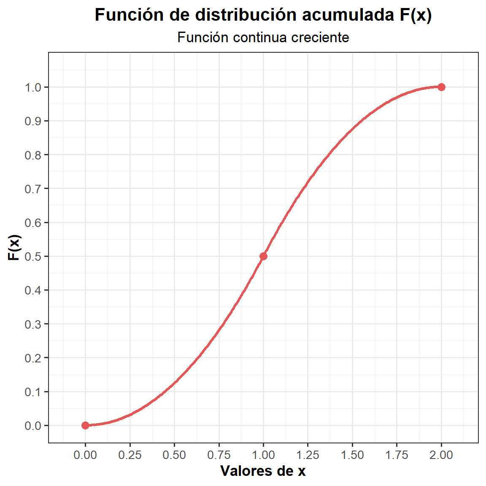
Interpretación: La función de distribución acumulada aumenta de manera continua desde 0 hasta 1. Primero crece en el intervalo (0,1) y luego sigue creciendo en [1,2) hasta alcanzar el valor total de 1.
Esperanza matemática o valor esperado
Por definición:
E(X)=\int_{-\infty}^{\infty} x f(x)\,dx
Entonces:
E(X)=\int_0^1 x(x)\,dx+\int_1^2 x(2-x)\,dx
E(X)=\int_0^1 x^2\,dx+\int_1^2 (2x-x^2)\,dx
Calculando:
\int_0^1 x^2\,dx=\left[\frac{x^3}{3}\right]_0^1=\frac{1}{3}
\int_1^2 (2x-x^2)\,dx = \left[x^2-\frac{x^3}{3}\right]_1^2
= \left(4-\frac{8}{3}\right)-\left(1-\frac{1}{3}\right) = \frac{4}{3}-\frac{2}{3} = \frac{2}{3}
Por tanto:
E(X)=\frac{1}{3}+\frac{2}{3}=1
Varianza
V(X)=E(X^2)-[E(X)]^2
E(X^2)=\int_{-\infty}^{\infty} x^2 f(x)\,dx
E(X^2)=\int_0^1 x^2(x)\,dx+\int_1^2 x^2(2-x)\,dx
E(X^2)=\int_0^1 x^3\,dx+\int_1^2 (2x^2-x^3)\,dx
Calculando:
\int_0^1 x^3\,dx=\left[\frac{x^4}{4}\right]_0^1=\frac{1}{4}
\int_1^2 (2x^2-x^3)\,dx = \left[\frac{2x^3}{3}-\frac{x^4}{4}\right]_1^2
= \left(\frac{16}{3}-4\right)-\left(\frac{2}{3}-\frac{1}{4}\right) = \frac{4}{3}-\frac{5}{12} = \frac{11}{12}
Entonces:
E(X^2)=\frac{1}{4}+\frac{11}{12}=\frac{14}{12}=\frac{7}{6}
V(X)=\frac{7}{6}-1^2=\frac{1}{6}
Desviación típica o estándar
\sigma=\sqrt{V(X)}=\sqrt{\frac{1}{6}}\approx 0.4082
Coeficiente de variación
CV=\frac{\sigma}{E(X)}=\frac{0.4082}{1}=0.4082
En porcentaje:
CV=0.4082\times 100\%\approx 40.82\%
Resultados
Interpretación: En promedio, la variable aleatoria toma el valor 1. La varianza y la desviación estándar muestran que los valores presentan una dispersión moderada alrededor de la media. El coeficiente de variación indica que la variabilidad relativa es del 40.82\% respecto al valor esperado.
x_9 <- seq(-0.2, 2.2, by = 0.01)
fx_9 <- ifelse(x_9 > 0 & x_9 < 1, x_9,
ifelse(x_9 >= 1 & x_9 < 2, 2 - x_9, 0))
df_c_9 <- data.frame(x = x_9, fx = fx_9)
mu_9 <- 1
ggplot(df_c_9, aes(x = x, y = fx)) +
geom_line(color = "#4C78A8", linewidth = 1.2) +
geom_area(fill = "#4C78A8", alpha = 0.20) +
geom_vline(xintercept = mu_9, linetype = "dashed", color = "#E45756", linewidth = 1) +
# Puntos importantes
geom_point(aes(x = 0, y = 0), shape = 1, size = 3, stroke = 1.2, color = "#4C78A8") +
geom_point(aes(x = 1, y = 1), shape = 16, size = 3, color = "#4C78A8") +
geom_point(aes(x = 2, y = 0), shape = 1, size = 3, stroke = 1.2, color = "#4C78A8") +
annotate("text", x = 1.08, y = 1.03, label = "E(X) = 1", color = "#E45756", size = 4) +
scale_x_continuous(breaks = seq(0, 2, 0.25), limits = c(-0.1, 2.1)) +
scale_y_continuous(breaks = seq(0, 1, 0.1), limits = c(0, 1.05)) +
labs(
title = "Esperanza matemática de la distribución",
subtitle = "La línea punteada indica el valor esperado",
x = "Valores de x",
y = "f(x)"
) +
theme_minimal(base_size = 13) +
theme(
plot.title = element_text(face = "bold", hjust = 0.5),
plot.subtitle = element_text(hjust = 0.5),
axis.title = element_text(face = "bold"),
panel.grid.minor = element_blank()
)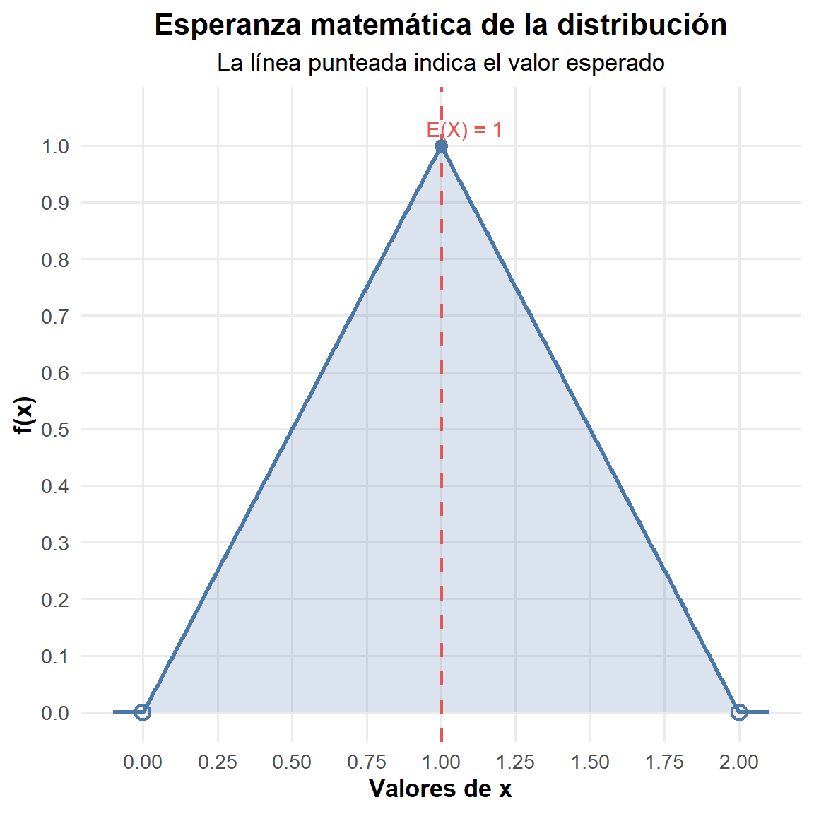
Interpretación: La línea vertical punteada marca el valor esperado E(X)=1, que coincide con el centro de simetría de la distribución triangular. Esto muestra que, en promedio, la variable aleatoria toma valores alrededor de 1.
Percentil 30
Se busca P_{30} tal que:
F(P_{30})=0.30
Como 0.30<0.50, se usa el tramo 0<x<1:
\frac{x^2}{2}=0.30
x^2=0.60
x=\sqrt{0.60}
Entonces:
P_{30}=\sqrt{0.60}\approx 0.7746
Percentil 70
Se busca P_{70} tal que:
F(P_{70})=0.70
Como 0.70>0.50, se usa el tramo 1\le x<2:
1-\frac{(2-x)^2}{2}=0.70
\frac{(2-x)^2}{2}=0.30
(2-x)^2=0.60
2-x=\sqrt{0.60}
x=2-\sqrt{0.60}
Entonces:
P_{70}=2-\sqrt{0.60}\approx 1.2254
Resultados
Interpretación: El percentil 30 indica que aproximadamente el 30\% de los valores de la distribución se encuentra por debajo de 0.7746. De forma similar, el percentil 70 indica que el 70\% de los valores se encuentra por debajo de 1.2254.
x_9 <- seq(-0.2, 2.2, by = 0.01)
Fx_9 <- ifelse(x_9 <= 0, 0,
ifelse(x_9 > 0 & x_9 < 1, x_9^2 / 2,
ifelse(x_9 >= 1 & x_9 < 2, 1 - ((2 - x_9)^2)/2, 1)))
df_d_9 <- data.frame(x = x_9, Fx = Fx_9)
p30_9 <- sqrt(0.60)
p70_9 <- 2 - sqrt(0.60)
ggplot(df_d_9, aes(x = x, y = Fx)) +
geom_line(color = "#E45756", linewidth = 1.2) +
geom_hline(yintercept = c(0.30, 0.70), linetype = "dashed", color = "#72B7B2") +
geom_vline(xintercept = c(p30_9, p70_9), linetype = "dashed", color = "#4C78A8") +
# Puntos de percentiles
geom_point(aes(x = p30_9, y = 0.30), color = "#4C78A8", size = 3) +
geom_point(aes(x = p70_9, y = 0.70), color = "#4C78A8", size = 3) +
# Puntos notables de F(x)
geom_point(aes(x = 0, y = 0), color = "#E45756", size = 3) +
geom_point(aes(x = 1, y = 0.5), color = "#E45756", size = 3) +
geom_point(aes(x = 2, y = 1), color = "#E45756", size = 3) +
annotate("text", x = p30_9 + 0.08, y = 0.22, label = paste0("P30 = ", round(p30_9, 4)), size = 4) +
annotate("text", x = p70_9 - 0.22, y = 0.62, label = paste0("P70 = ", round(p70_9, 4)), size = 4) +
scale_x_continuous(breaks = seq(0, 2, 0.25), limits = c(-0.1, 2.1)) +
scale_y_continuous(breaks = seq(0, 1, 0.1), limits = c(0, 1.05)) +
labs(
title = "Percentiles 30 y 70 de la distribución",
subtitle = "Ubicación de P30 y P70 sobre F(x)",
x = "Valores de x",
y = "F(x)"
) +
theme_minimal(base_size = 13) +
theme(
plot.title = element_text(face = "bold", hjust = 0.5),
plot.subtitle = element_text(hjust = 0.5),
axis.title = element_text(face = "bold"),
panel.grid.minor = element_blank()
)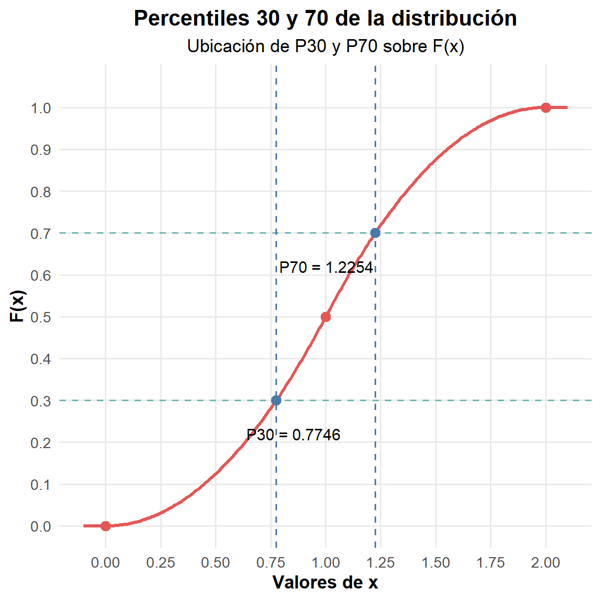
Interpretación:El percentil 30 indica que aproximadamente el 30\% de los valores de la variable aleatoria se encuentra por debajo de 0.7746. De manera análoga, el percentil 70 indica que el 70\% de los valores se encuentra por debajo de 1.2254. Dado que la distribución es simétrica respecto a x=1, ambos percentiles se ubican a la misma distancia de la media, reflejando el equilibrio de la distribución alrededor de su valor esperado.
Tabla de Función de densidad y función de distribución acumulada de X
tabla <- data.frame(
intervalo = c("x < 0", "0 ≤ x < 1", "1 ≤ x < 2", "x ≥ 2"),
fx = c("0", "x", "2 - x", "0"),
Fx = c("0", "x²/2", "1 - (2 - x)²/2", "1")
)
kbl(
tabla,
format = "html",
escape = FALSE,
align = "c",
col.names = c("Intervalo de x", "f(x)", "F(x)")
) %>%
add_header_above(
c("Función de densidad y función de distribución acumulada de X" = 3),
background = "#1F4E79",
color = "white",
bold = TRUE,
font_size = 18,
align = "center",
extra_css = "border:1px solid black;"
) %>%
kable_styling(
full_width = FALSE,
position = "center"
) %>%
row_spec(
0,
bold = TRUE,
color = "white",
background = "#5B9BD5",
extra_css = "border:1px solid black;"
) %>%
row_spec(
c(1, 3),
background = "#EAF2F8",
extra_css = "border:1px solid black;"
) %>%
row_spec(
c(2, 4),
extra_css = "border:1px solid black;"
) %>%
column_spec(1:3, extra_css = "border:1px solid black;")| Intervalo de x | f(x) | F(x) |
|---|---|---|
| x < 0 | 0 | 0 |
| 0 ≤ x < 1 | x | x²/2 |
| 1 ≤ x < 2 | 2 - x | 1 - (2 - x)²/2 |
| x ≥ 2 | 0 | 1 |
Interpretación La variable aleatoria X sigue una distribución continua triangular en el intervalo [0,2], simétrica respecto a x=1. Los valores cercanos a 1 son los más probables, mientras que los extremos tienen menor probabilidad.
En una población, la cantidad de plomo que tiene una persona en la sangre, medida en p.p.m., es una variable aleatoria con función de densidad
f(x)= \begin{cases} \dfrac{x}{500} & 0\le x<20 \\[6pt] \dfrac{50-x}{750} & 20\le x<50 \\[6pt] 0 & \text{en el resto} \end{cases}
Representar f(x) gráficamente.
Demostrar que f(x) es una función de densidad.
De entre las personas de la comunidad cuyo contenido de plomo en la sangre es superior a 15 p.p.m., ¿qué porcentaje tiene en la sangre una cantidad de plomo superior a 40 p.p.m.?
Calcular la cantidad media de plomo en la sangre de los individuos de la población.
Elegimos una persona al azar. Obtener la probabilidad de que la cantidad de plomo en su sangre sea inferior a 25 p.p.m.
Obtener la probabilidad de que en 40 personas elegidas al azar, haya entre 15 y 20 personas con una cantidad de plomo en la sangre inferior a 25 p.p.m.
Solución
La función de densidad es:
f(x)= \begin{cases} \dfrac{x}{500}, & 0\le x<20 \\[6pt] \dfrac{50-x}{750}, & 20\le x<50 \\[6pt] 0, & \text{en el resto} \end{cases}
Se observa que:
Evaluamos algunos puntos importantes:
f(0)=0
f(20)=\frac{20}{500}=0.04
f(20)=\frac{50-20}{750}=\frac{30}{750}=0.04
f(50)=0
Por tanto, la gráfica sube desde (0,0) hasta (20,0.04) y luego baja hasta (50,0).
x_19 <- seq(-2, 52, by = 0.01)
fx_19 <- ifelse(x_19 >= 0 & x_19 < 20, x_19/500,
ifelse(x_19 >= 20 & x_19 < 50, (50 - x_19)/750, 0))
df_19 <- data.frame(x = x_19, fx = fx_19)
ggplot(df_19, aes(x = x, y = fx)) +
geom_line(color = "#4C78A8", linewidth = 1.2) +
geom_area(fill = "#4C78A8", alpha = 0.20) +
geom_point(aes(x = 0, y = 0), shape = 16, size = 3, color = "#4C78A8") +
geom_point(aes(x = 20, y = 0.04), shape = 16, size = 3, color = "#4C78A8") +
geom_point(aes(x = 50, y = 0), shape = 1, size = 3, stroke = 1.2, color = "#4C78A8") +
scale_x_continuous(breaks = seq(0, 50, 5), limits = c(-1, 51)) +
scale_y_continuous(breaks = seq(0, 0.04, 0.005), limits = c(0, 0.043)) +
labs(
title = "Función de densidad f(x)",
subtitle = "Cantidad de plomo en sangre en p.p.m.",
x = "Valores de x",
y = "f(x)"
) +
theme_minimal(base_size = 13) +
theme(
plot.title = element_text(face = "bold", hjust = 0.5),
plot.subtitle = element_text(hjust = 0.5),
axis.title = element_text(face = "bold"),
panel.grid.minor = element_blank()
)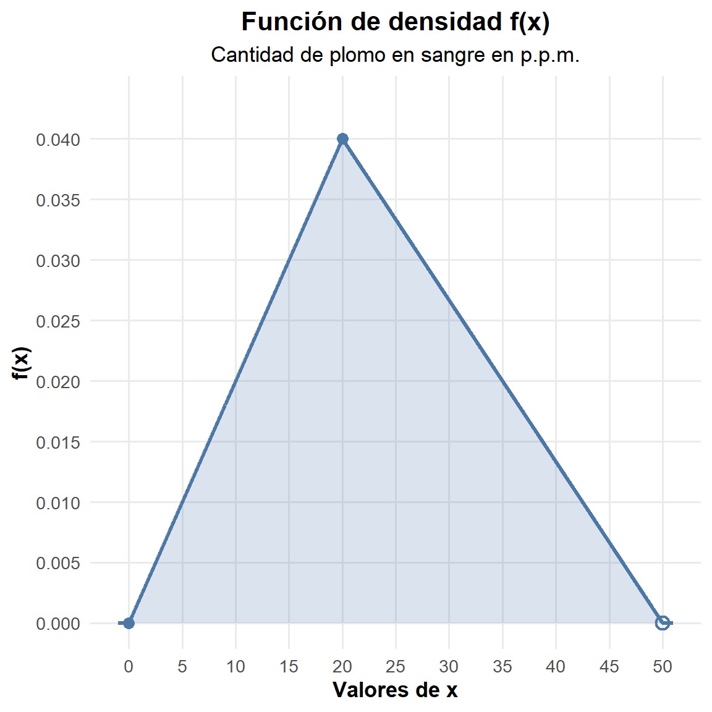
Interpretación: La mayor concentración de probabilidad se encuentra alrededor de los valores intermedios, especialmente cerca de 20 p.p.m., donde la densidad alcanza su valor máximo.
Para demostrar que f(x) es una función de densidad, se deben verificar dos condiciones.
1. No negatividad
Debe cumplirse:
f(x)\ge 0 \quad \text{para todo } x
En este caso:
Si 0\le x<20, entonces \dfrac{x}{500}\ge 0
Si 20\le x<50, entonces \dfrac{50-x}{750}\ge 0
En el resto, f(x)=0
Por lo tanto:
f(x)\ge 0
2. Integral total igual a 1
Debe cumplirse:
\int_{-\infty}^{\infty} f(x)\,dx=1
Como la función solo es distinta de cero en [0,20) y [20,50):
\int_{-\infty}^{\infty} f(x)\,dx = \int_0^{20} \frac{x}{500}\,dx + \int_{20}^{50} \frac{50-x}{750}\,dx
Calculando la primera integral:
\int_0^{20} \frac{x}{500}\,dx = \frac{1}{500}\int_0^{20} x\,dx
= \frac{1}{500}\left[\frac{x^2}{2}\right]_0^{20} = \frac{1}{500}\cdot \frac{400}{2} = \frac{200}{500} = 0.4
Calculando la segunda integral:
\int_{20}^{50} \frac{50-x}{750}\,dx = \frac{1}{750}\int_{20}^{50}(50-x)\,dx
= \frac{1}{750}\left[50x-\frac{x^2}{2}\right]_{20}^{50}
= \frac{1}{750}(1250-800) = \frac{450}{750} = 0.6
Entonces:
\int_{-\infty}^{\infty} f(x)\,dx=0.4+0.6=1
Conclusión: Como f(x)\ge 0 y el área total bajo la curva es igual a 1, entonces f(x) sí es una función de densidad.
Interpretación: La función propuesta representa correctamente una distribución de probabilidad continua, ya que no toma valores negativos y acumula una probabilidad total de 1.
Por definición, la función de distribución acumulada viene dada por:
F(x)=P(X\le x)=\int_{-\infty}^{x} f(t)\,dt
donde la densidad es:
f(x)= \begin{cases} \dfrac{x}{500}, & 0\le x<20 \\[6pt] \dfrac{50-x}{750}, & 20\le x<50 \\[6pt] 0, & \text{en el resto} \end{cases}
Como la función está definida por tramos, se debe calcular F(x) en cada intervalo.
Caso 1: x<0
Si x<0, no se ha acumulado probabilidad porque la densidad es nula antes de 0. Por tanto:
F(x)=0
Caso 2: 0\le x<20
En este intervalo, la acumulada se obtiene integrando desde 0 hasta x:
F(x)=\int_0^x \frac{t}{500}\,dt
Sacando la constante:
F(x)=\frac{1}{500}\int_0^x t\,dt
Integrando:
F(x)=\frac{1}{500}\left[\frac{t^2}{2}\right]_0^x
Evaluando en los límites:
F(x)=\frac{1}{500}\cdot \frac{x^2}{2}
F(x)=\frac{x^2}{1000}
Caso 3: 20\le x<50
En este intervalo, primero ya se acumuló toda la probabilidad desde 0 hasta 20, y luego se suma lo acumulado desde 20 hasta x.
Entonces:
F(x)=\int_0^{20}\frac{t}{500}\,dt+\int_{20}^x \frac{50-t}{750}\,dt
La primera integral ya se puede calcular:
\int_0^{20}\frac{t}{500}\,dt=\frac{20^2}{1000}=\frac{400}{1000}=0.4
Por tanto:
F(x)=0.4+\int_{20}^x \frac{50-t}{750}\,dt
Sacando la constante:
F(x)=0.4+\frac{1}{750}\int_{20}^x (50-t)\,dt
Integrando:
F(x)=0.4+\frac{1}{750}\left[50t-\frac{t^2}{2}\right]_{20}^x
Evaluando en los límites:
F(x)=0.4+\frac{1}{750}\left(50x-\frac{x^2}{2}-800\right)
Expresando 0.4 como fracción:
0.4=\frac{2}{5}=\frac{600}{1500}
y además:
\frac{1}{750}\left(50x-\frac{x^2}{2}-800\right) = \frac{100x-x^2-1600}{1500}
Entonces:
F(x)=\frac{600}{1500}+\frac{100x-x^2-1600}{1500}
F(x)=\frac{100x-x^2-1000}{1500}
Caso 4: x\ge 50
A partir de x=50 ya se acumuló toda la probabilidad, por lo que:
F(x)=1
F(x)= \begin{cases} 0 & x < 0 \\[6pt] \dfrac{x^2}{1000} & 0 \le x < 20 \\[10pt] \dfrac{100x - x^2 - 1000}{1500} & 20 \le x < 50 \\[10pt] 1 & x \ge 50 \end{cases}
Fx_19 <- ifelse(x_19 < 0, 0,
ifelse(x_19 >= 0 & x_19 < 20, x_19^2 / 1000,
ifelse(x_19 >= 20 & x_19 < 50, (100 * x_19 - x_19^2 - 1000)/1500, 1)))
df_F_19 <- data.frame(x = x_19, Fx = Fx_19)
ggplot(df_F_19, aes(x = x, y = Fx)) +
geom_line(color = "#E45756", linewidth = 1.2) +
geom_point(aes(x = 0, y = 0), shape = 16, size = 3, color = "#E45756") +
geom_point(aes(x = 20, y = 0.4), shape = 16, size = 3, color = "#E45756") +
geom_point(aes(x = 50, y = 1), shape = 16, size = 3, color = "#E45756") +
scale_x_continuous(breaks = seq(0, 50, 5), limits = c(-1, 51)) +
scale_y_continuous(breaks = seq(0, 1, 0.1), limits = c(0, 1.05)) +
labs(
title = "Función de distribución acumulada F(x)",
subtitle = "Cantidad de plomo en sangre en p.p.m.",
x = "Valores de x",
y = "F(x)"
) +
theme_minimal(base_size = 13) +
theme(
plot.title = element_text(face = "bold", hjust = 0.5),
plot.subtitle = element_text(hjust = 0.5),
axis.title = element_text(face = "bold"),
panel.grid.minor = element_blank()
)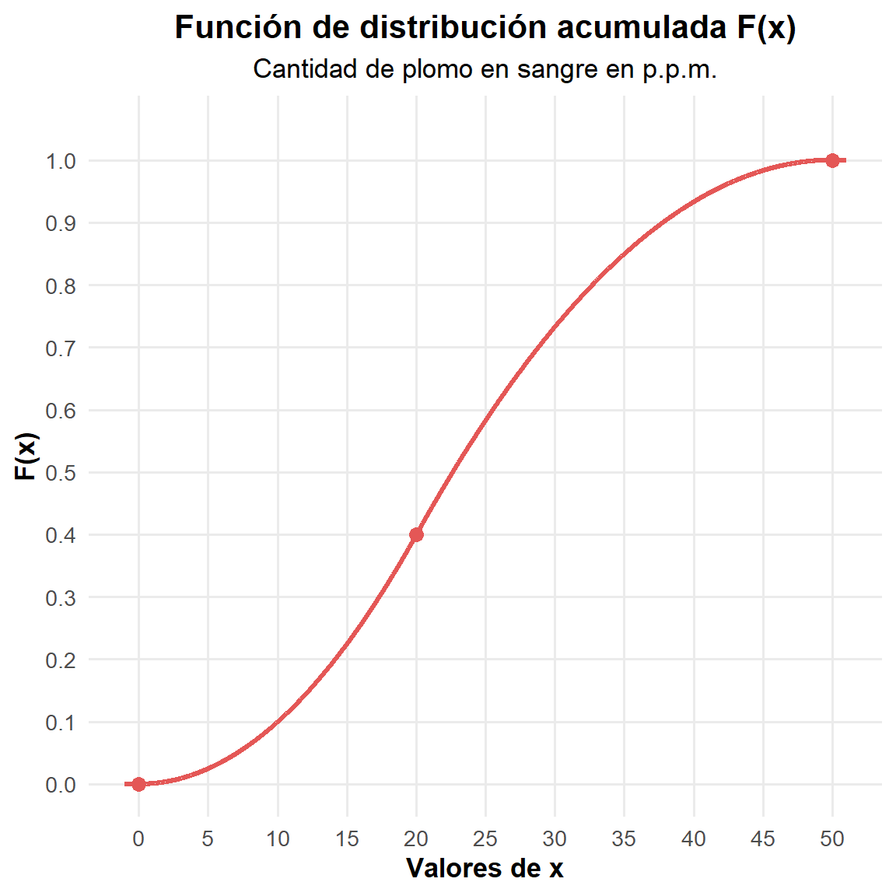
Interpretación: La función de densidad aumenta linealmente desde x=0 hasta x=20, donde alcanza su valor máximo, y luego disminuye linealmente hasta x=50. Esto indica que los niveles intermedios de plomo en sangre, especialmente alrededor de 20 p.p.m., son los más probables dentro de la distribución.
Se pide calcular el porcentaje de personas con contenido de plomo superior a 40 p.p.m., entre aquellas que ya se sabe que tienen contenido superior a 15 p.p.m.
Esto corresponde a una probabilidad condicional:
P(X>40\mid X>15)=\frac{P(X>40)}{P(X>15)}
Cálculo de P(X>40)
P(X>40)=\int_{40}^{50}\frac{50-x}{750}\,dx
= \frac{1}{750}\left[50x-\frac{x^2}{2}\right]_{40}^{50}
= \frac{1}{750}(1250-1200) = \frac{50}{750} = \frac{1}{15} \approx 0.0667
Cálculo de P(X>15)
Primero calculamos:
P(X\le 15)=\int_0^{15}\frac{x}{500}\,dx
= \frac{1}{500}\left[\frac{x^2}{2}\right]_0^{15} = \frac{225}{1000} = 0.225
Entonces:
P(X>15)=1-0.225=0.775
Probabilidad condicional
P(X>40\mid X>15)=\frac{0.0667}{0.775}\approx 0.0860
En porcentaje:
0.0860\times 100\%\approx 8.60\%
Resultado: El porcentaje buscado es aproximadamente:
8.60\%
Interpretación: Entre las personas que ya presentan un nivel de plomo superior a 15 p.p.m., alrededor del 8.60\% tiene una cantidad superior a 40 p.p.m.
df_c_19 <- df_19 |>
mutate(
area_15 = ifelse(x > 15, fx, 0),
area_40 = ifelse(x > 40, fx, 0)
)
ggplot(df_c_19, aes(x = x, y = fx)) +
geom_line(color = "#4C78A8", linewidth = 1.2) +
geom_area(aes(y = area_15), fill = "#72B7B2", alpha = 0.35) +
geom_area(aes(y = area_40), fill = "#F28E2B", alpha = 0.55) +
geom_vline(xintercept = c(15, 40), linetype = "dashed", color = "#E45756") +
scale_x_continuous(breaks = seq(0, 50, 5), limits = c(-1, 51)) +
scale_y_continuous(breaks = seq(0, 0.04, 0.005), limits = c(0, 0.043)) +
labs(
title = "Inciso c: Probabilidad condicional",
subtitle = "X > 40 dentro del conjunto X > 15",
x = "Valores de x",
y = "f(x)"
) +
annotate("text", x = 28, y = 0.030, label = "Región X > 15", size = 4) +
annotate("text", x = 44, y = 0.012, label = "Región X > 40", size = 4) +
theme_minimal(base_size = 13) +
theme(
plot.title = element_text(face = "bold", hjust = 0.5),
plot.subtitle = element_text(hjust = 0.5),
axis.title = element_text(face = "bold"),
panel.grid.minor = element_blank()
)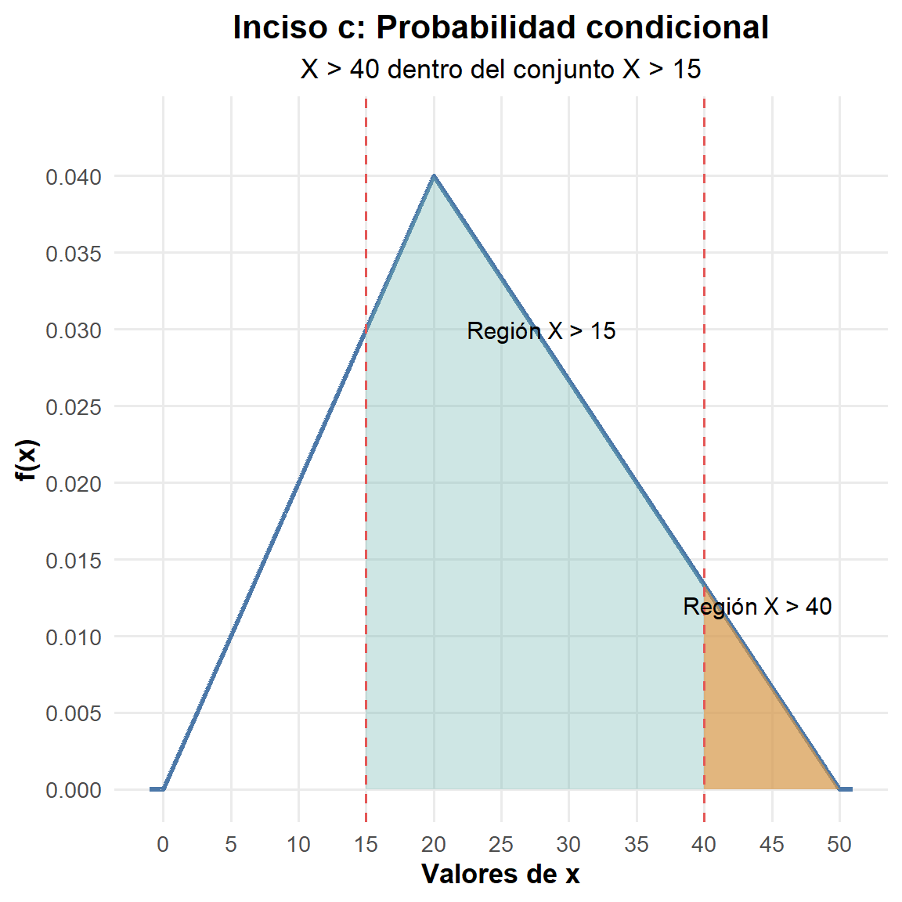
Interpretación: La región sombreada a la derecha de x=15 representa a las personas cuyo contenido de plomo en sangre es superior a 15 p.p.m. Dentro de esa región, la parte a la derecha de x=40 corresponde a quienes además superan 40 p.p.m. Por tanto, la probabilidad condicional se interpreta como la proporción del área de X>40 dentro del área total de X>15, resultando aproximadamente un 8.60\%.
Esperanza matemática o media
Por definición:
E(X)=\int_{-\infty}^{\infty}x f(x)\,dx
Entonces:
E(X)=\int_0^{20}x\left(\frac{x}{500}\right)\,dx+\int_{20}^{50}x\left(\frac{50-x}{750}\right)\,dx
E(X)=\int_0^{20}\frac{x^2}{500}\,dx+\int_{20}^{50}\frac{50x-x^2}{750}\,dx
Calculando la primera parte:
\int_0^{20}\frac{x^2}{500}\,dx = \frac{1}{500}\left[\frac{x^3}{3}\right]_0^{20} = \frac{8000}{1500} = \frac{16}{3}
Calculando la segunda parte:
\int_{20}^{50}\frac{50x-x^2}{750}\,dx = \frac{1}{750}\left[25x^2-\frac{x^3}{3}\right]_{20}^{50} = 18
Entonces:
E(X)=\frac{16}{3}+18=\frac{70}{3}\approx 23.33
Resultado: La media de plomo en sangre es:
E(X)=\frac{70}{3}\approx 23.33 \text{ p.p.m.}
Varianza
V(X)=E(X^2)-[E(X)]^2
E(X^2)=\int_0^{20}x^2\left(\frac{x}{500}\right)\,dx+\int_{20}^{50}x^2\left(\frac{50-x}{750}\right)\,dx
E(X^2)=\int_0^{20}\frac{x^3}{500}\,dx+\int_{20}^{50}\frac{50x^2-x^3}{750}\,dx
Calculando:
E(X^2)=80+650=730
V(X)=730-\left(\frac{70}{3}\right)^2
V(X)=730-\frac{4900}{9}=\frac{1670}{9}\approx 185.56
Desviación estándar
\sigma=\sqrt{V(X)}=\sqrt{\frac{1670}{9}}\approx 13.62
Coeficiente de variación
CV=\frac{\sigma}{E(X)}=\frac{13.62}{23.33}\approx 0.5839
En porcentaje:
CV=0.5839\times 100\%\approx 58.39\%
Resultados
Interpretación: En promedio, la cantidad de plomo en la sangre de los individuos de la población es de aproximadamente 23.33 p.p.m. La variabilidad es relativamente amplia, como lo muestran la desviación estándar y el coeficiente de variación del 58.39\%, lo cual indica dispersión considerable respecto a la media.
mu_19 <- 70/3
ggplot(df_19, aes(x = x, y = fx)) +
geom_line(color = "#4C78A8", linewidth = 1.2) +
geom_area(fill = "#4C78A8", alpha = 0.20) +
geom_vline(xintercept = mu_19, linetype = "dashed", color = "#E45756", linewidth = 1) +
geom_point(aes(x = 20, y = 0.04), shape = 16, size = 3, color = "#4C78A8") +
annotate("text", x = mu_19 + 1.5, y = 0.036,
label = paste0("E(X) = ", round(mu_19, 2)),
color = "#E45756", size = 4, hjust = 0) +
scale_x_continuous(breaks = seq(0, 50, 5), limits = c(-1, 51)) +
scale_y_continuous(breaks = seq(0, 0.04, 0.005), limits = c(0, 0.043)) +
labs(
title = "Inciso d: Esperanza matemática",
subtitle = "La línea punteada indica la media de la distribución",
x = "Valores de x",
y = "f(x)"
) +
theme_minimal(base_size = 13) +
theme(
plot.title = element_text(face = "bold", hjust = 0.5),
plot.subtitle = element_text(hjust = 0.5),
axis.title = element_text(face = "bold"),
panel.grid.minor = element_blank()
)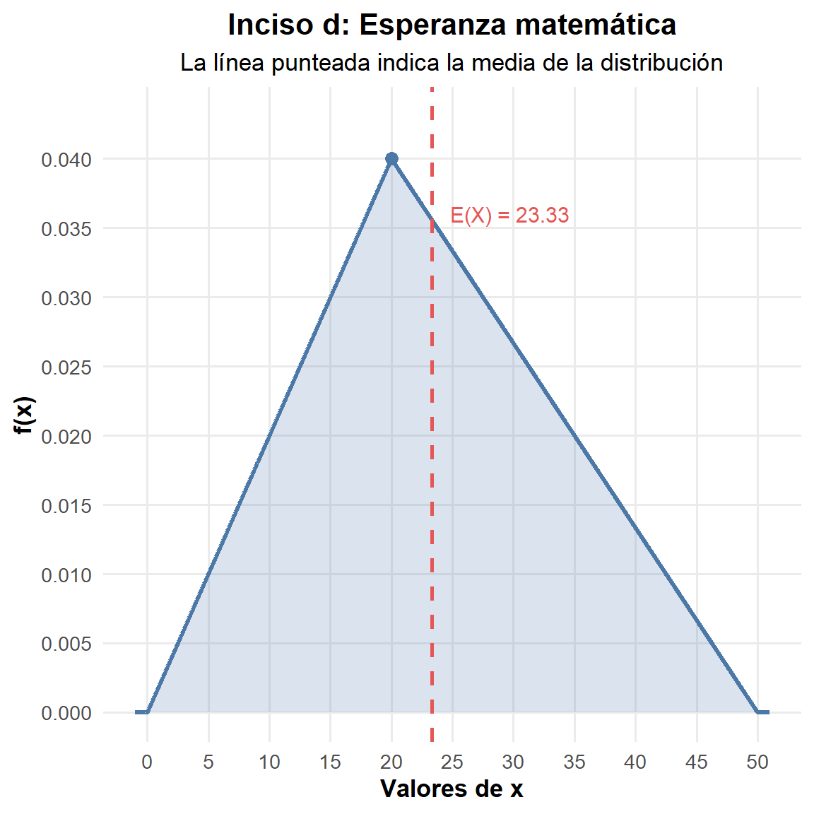
Interpretación: La línea vertical punteada representa la media de la distribución, E(X)=\frac{70}{3}\approx 23.33 p.p.m. Este valor señala el nivel promedio de plomo en sangre en la población. La media se ubica ligeramente a la derecha del punto donde la densidad alcanza su máximo, lo que refleja la influencia de la cola más extensa hacia valores altos.
Se pide calcular:
P(X<25)
Entonces:
P(X<25)=\int_0^{20}\frac{x}{500}\,dx+\int_{20}^{25}\frac{50-x}{750}\,dx
La primera parte ya se calculó:
\int_0^{20}\frac{x}{500}\,dx=0.4
Ahora calculamos la segunda parte:
\int_{20}^{25}\frac{50-x}{750}\,dx = \frac{1}{750}\left[50x-\frac{x^2}{2}\right]_{20}^{25}
= \frac{1}{750}(937.5-800) = \frac{137.5}{750} = 0.1833
Por tanto:
P(X<25)=0.4+0.1833=0.5833
Equivalentemente:
P(X<25)=\frac{7}{12}
Resultado:
P(X<25)=\frac{7}{12}\approx 0.5833
Interpretación: La probabilidad de que una persona elegida al azar tenga menos de 25 p.p.m. de plomo en la sangre es aproximadamente 0.5833, es decir, un 58.33\%.
df_e_19 <- df_19 |>
mutate(area_25 = ifelse(x < 25, fx, 0))
ggplot(df_e_19, aes(x = x, y = fx)) +
geom_line(color = "#4C78A8", linewidth = 1.2) +
geom_area(aes(y = area_25), fill = "#59A14F", alpha = 0.35) +
geom_vline(xintercept = 25, linetype = "dashed", color = "#E45756") +
annotate("text", x = 15, y = 0.030, label = "P(X < 25) = 7/12", size = 4) +
scale_x_continuous(breaks = seq(0, 50, 5), limits = c(-1, 51)) +
scale_y_continuous(breaks = seq(0, 0.04, 0.005), limits = c(0, 0.043)) +
labs(
title = "Inciso e: Probabilidad de tener menos de 25 p.p.m.",
subtitle = "Área bajo la densidad hasta x = 25",
x = "Valores de x",
y = "f(x)"
) +
theme_minimal(base_size = 13) +
theme(
plot.title = element_text(face = "bold", hjust = 0.5),
plot.subtitle = element_text(hjust = 0.5),
axis.title = element_text(face = "bold"),
panel.grid.minor = element_blank()
)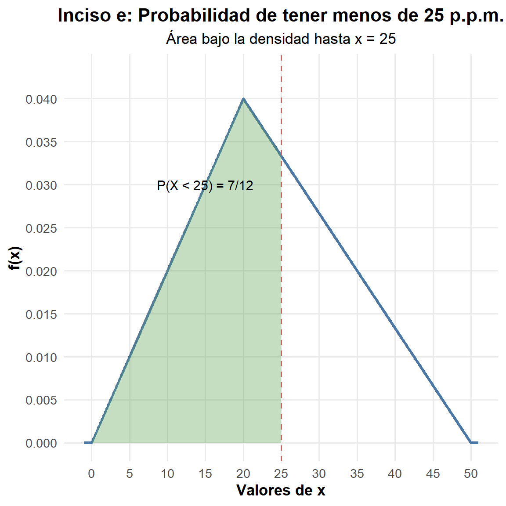
Interpretación :La región sombreada bajo la función de densidad desde x=0 hasta x=25 representa la probabilidad de que una persona elegida al azar tenga una cantidad de plomo en sangre inferior a 25 p.p.m. El área de esa región es \frac{7}{12}\approx 0.5833, lo que equivale a un 58.33\%.
Sea Y el número de personas, entre 40 elegidas al azar, que tienen menos de 25 p.p.m. de plomo en la sangre.
Entonces:
Y\sim Binomial(n=40,p=0.5833)
donde:
p=P(X<25)=\frac{7}{12}
Se pide:
P(15\le Y\le 20)
Por definición:
P(15\le Y\le 20)=\sum_{k=15}^{20}\binom{40}{k}p^k(1-p)^{40-k}
Calculando numéricamente:
P(15\le Y\le 20)\approx 0.1734
Resultado:
P(15\le Y\le 20)\approx 0.1734
Interpretación: La probabilidad de que, al seleccionar 40 personas al azar, entre 15 y 20 de ellas tengan menos de 25 p.p.m. de plomo en la sangre es aproximadamente 17.34\%.
k <- 0:40
p <- 7/12
fy <- dbinom(k, size = 40, prob = p)
df_f_19 <- data.frame(
k = k,
fy = fy,
destacado = ifelse(k >= 15 & k <= 20, "Sí", "No")
)
ggplot(df_f_19, aes(x = k, y = fy, color = destacado)) +
geom_point(shape = 15, size = 3) +
geom_segment(aes(xend = k, yend = 0), linewidth = 0.8) +
scale_color_manual(values = c("No" = "gray70", "Sí" = "#E45756")) +
scale_x_continuous(breaks = seq(0, 40, 2), limits = c(-1, 41)) +
labs(
title = "Inciso f: Distribución binomial",
subtitle = "Se resaltan los valores entre 15 y 20",
x = "Número de personas con menos de 25 p.p.m.",
y = "P(Y = k)",
color = ""
) +
theme_minimal(base_size = 13) +
theme(
plot.title = element_text(face = "bold", hjust = 0.5),
plot.subtitle = element_text(hjust = 0.5),
axis.title = element_text(face = "bold"),
panel.grid.minor = element_blank()
)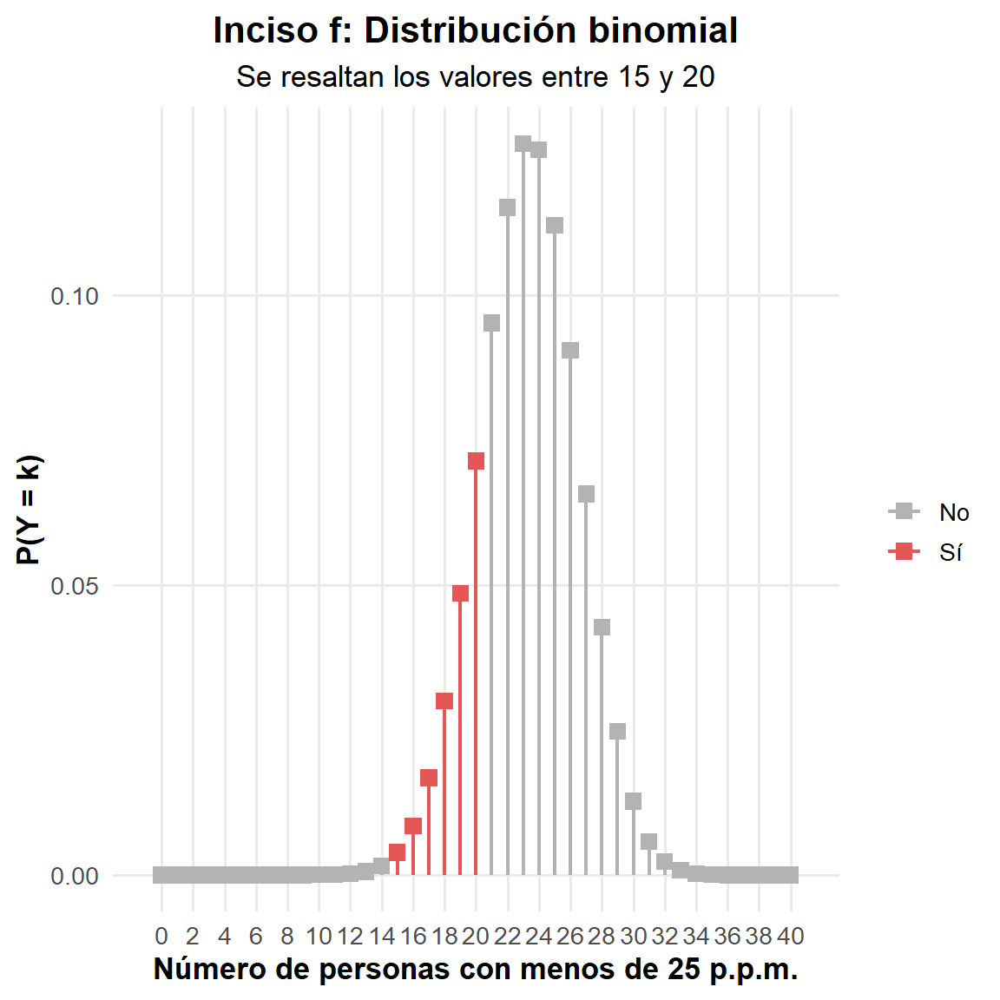
Interpretación: Cada punto representa la probabilidad de que, al seleccionar 40 personas, exactamente k tengan una cantidad de plomo en sangre inferior a 25 p.p.m. Los segmentos verticales indican la magnitud de dichas probabilidades. Los valores resaltados corresponden al intervalo 15 \le k \le 20, que representa el evento de interés. La suma de esas probabilidades es aproximadamente 0.1734, lo que indica la probabilidad de que entre 15 y 20 personas cumplan dicha condición.
Tabla de Función de densidad y función de distribución acumulada de X
tabla <- data.frame(
intervalo = c("x < 0", "0 ≤ x < 20", "20 ≤ x < 50", "x ≥ 50"),
fx = c("0", "x/500", "(50-x)/750", "0"),
Fx = c("0", "x²/1000", "(-x² + 100x - 1000)/1500", "1")
)
kbl(
tabla,
format = "html",
escape = FALSE,
align = "c",
col.names = c("Intervalo de x", "f(x)", "F(x)")
) %>%
add_header_above(
c("Función de densidad y función de distribución acumulada de X" = 3),
background = "#1F4E79",
color = "white",
bold = TRUE,
font_size = 18,
align = "center",
extra_css = "border:1px solid black;"
) %>%
kable_styling(
full_width = FALSE,
position = "center"
) %>%
row_spec(
0,
bold = TRUE,
color = "white",
background = "#5B9BD5",
extra_css = "border:1px solid black;"
) %>%
row_spec(
c(1, 3),
background = "#EAF2F8",
extra_css = "border:1px solid black;"
) %>%
row_spec(
c(2, 4),
extra_css = "border:1px solid black;"
) %>%
column_spec(1:3, extra_css = "border:1px solid black;")| Intervalo de x | f(x) | F(x) |
|---|---|---|
| x < 0 | 0 | 0 |
| 0 ≤ x < 20 | x/500 | x²/1000 |
| 20 ≤ x < 50 | (50-x)/750 | (-x² + 100x - 1000)/1500 |
| x ≥ 50 | 0 | 1 |
Interpretación:La tabla presenta algunos valores representativos de la variable continua, junto con la densidad y la función acumulada. Se observa que la densidad aumenta hasta x=20 y luego disminuye, mientras la acumulada crece de manera continua hasta alcanzar el valor 1 en x=50.